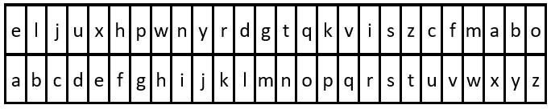

Data Structures and Algorithms
Table of Contents
- 1. Advent of Code @AoC
- 1.1. 2015
- 1.2. 2016
- 1.3. 2017
- 1.4. 2018
- 1.5. 2021
- 1.6. 2022
- 1.6.1. Day 1: Calorie Counting
- 1.6.2. Day 2: Rock Paper Scissors
- 1.6.3. Day 3: Rucksack Reorganization
- 1.6.4. Day 4: Camp Cleanup
- 1.6.5. Day 5: Supply Stacks
- 1.6.6. Day 6: Tuning Trouble
- 1.6.7. Day 7: No Space Left On Device
- 1.6.8. Day 8: Treetop Tree House
- 1.6.9. Day 9: Rope Bridge
- 1.6.10. Day 10: Cathode-Ray Tube
- 1.6.11. Day 11: Monkey in the Middle
- 1.6.12. Day 12: Hill Climbing Algorithm
- 1.6.13. Day 13: Distress Signal
- 1.6.14. Day 14: Regolith Reservoir
- 2. Leetcode @LeetCode
- 2.1. Two sum easy top_interview_question
- 2.2. Valid Parentheses easy top_interview_question
- 2.3. Palindrome Number easy
- 2.4. Move Zeroes easy top_interview_question
- 2.5. Merge Sorted Array top_interview_question easy
- 2.6. Decode the Message easy
- 2.7. Pascal’s Triangle easy top_interview_question
- 2.8. Roman to Integer easy top_interview_question
- 2.9. Merge Two Sorted Lists top_interview_question easy
- 2.10. Binary Tree Inorder Traversal top_interview_question easy
- 2.11. Convert Sorted Array to Binary Search Tree easy top_interview_question
- 2.12. Permutations top_interview_question medium
- 2.13. Rotate Image medium top_interview_question
- 2.14. Container With Most Water top_interview_question medium
- 2.15. Remove Nth Node From End of List top_interview_question medium
1. Advent of Code @AoC
1.1. 2015
1.1.1. Day 1: Not Quite Lisp
- Description
Santa was hoping for a white Christmas, but his weather machine’s “snow” function is powered by stars, and he’s fresh out! To save Christmas, he needs you to collect fifty stars by December 25th.
Collect stars by helping Santa solve puzzles. Two puzzles will be made available on each day in the Advent calendar; the second puzzle is unlocked when you complete the first. Each puzzle grants one star. Good luck!
Here’s an easy puzzle to warm you up.
Santa is trying to deliver presents in a large apartment building, but he can’t find the right floor - the directions he got are a little confusing. He starts on the ground floor (floor 0) and then follows the instructions one character at a time.
An opening parenthesis, (, means he should go up one floor, and a closing parenthesis, ), means he should go down one floor.
The apartment building is very tall, and the basement is very deep; he will never find the top or bottom floors.
For example:
(())and()()both result in floor 0.(((and(()(()(both result in floor 3.))(((((also results in floor 3.())and))(both result in floor -1 (the first basement level).)))and)())())both result in floor -3.
To what floor do the instructions take Santa?
Your puzzle answer was 138.
— Part Two — Now, given the same instructions, find the position of the first character that causes him to enter the basement (floor -1). The first character in the instructions has position 1, the second character has position 2, and so on.
For example:
)causes him to enter the basement at character position 1.()())causes him to enter the basement at character position 5.
What is the position of the character that causes Santa to first enter the basement?
Your puzzle answer was 1771.
- Solution
Part 1
1: f = open("./files/AoC/2015_1.txt", "r") 2: 3: currentFloor = 0 4: for line in f: 5: for instr in line.strip(): 6: if instr == "(": 7: currentFloor += 1 8: else: 9: currentFloor -= 1 10: 11: f.close() 12: 13: print(currentFloor)
138
Part 2
1: f = open("./files/AoC/2015_1.txt", "r") 2: 3: currentFloor = 0 4: pos = -1 5: for line in f: 6: for i, instr in enumerate(line.strip()): 7: if instr == "(": 8: currentFloor += 1 9: else: 10: currentFloor -= 1 11: 12: if currentFloor == -1 and pos == -1: 13: pos = i + 1 14: 15: f.close() 16: 17: print(pos)
1771 138
1.1.2. Day 2: I Was Told There Would Be No Math
- Description
The elves are running low on wrapping paper, and so they need to submit an order for more. They have a list of the dimensions (length l, width w, and height h) of each present, and only want to order exactly as much as they need.
Fortunately, every present is a box (a perfect right rectangular prism), which makes calculating the required wrapping paper for each gift a little easier: find the surface area of the box, which is 2*l*w + 2*w*h + 2*h*l. The elves also need a little extra paper for each present: the area of the smallest side.
For example:
- A present with dimensions 2x3x4 requires 2*6 + 2*12 + 2*8 = 52 square feet of wrapping paper plus 6 square feet of slack, for a total of 58 square feet.
- A present with dimensions 1x1x10 requires 2*1 + 2*10 + 2*10 = 42 square feet of wrapping paper plus 1 square foot of slack, for a total of 43 square feet.
All numbers in the elves’ list are in feet. How many total square feet of wrapping paper should they order?
Your puzzle answer was 1586300.
— Part Two — The elves are also running low on ribbon. Ribbon is all the same width, so they only have to worry about the length they need to order, which they would again like to be exact.
The ribbon required to wrap a present is the shortest distance around its sides, or the smallest perimeter of any one face. Each present also requires a bow made out of ribbon as well; the feet of ribbon required for the perfect bow is equal to the cubic feet of volume of the present. Don’t ask how they tie the bow, though; they’ll never tell.
For example:
- A present with dimensions 2x3x4 requires 2+2+3+3 = 10 feet of ribbon to wrap the present plus 2*3*4 = 24 feet of ribbon for the bow, for a total of 34 feet.
- A present with dimensions 1x1x10 requires 1+1+1+1 = 4 feet of ribbon to wrap the present plus 1*1*10 = 10 feet of ribbon for the bow, for a total of 14 feet.
How many total feet of ribbon should they order?
Your puzzle answer was 3737498.
- Solution
Part 1
1: f = open("./files/AoC/2015_2.txt", "r") 2: 3: totalArea = 0 4: for line in f: 5: dimensions = list(map(int, line.strip().split("x"))) 6: 7: l, w, h = dimensions 8: sa = 2 * (l * w + w * h + h * l) 9: 10: dimensions.sort() 11: 12: extraArea = dimensions[0] * dimensions[1] 13: 14: totalArea += sa + extraArea 15: 16: print(totalArea)
1586300
Part 2
1: from math import prod 2: 3: f = open("./files/AoC/2015_2.txt", "r") 4: 5: totalRibbonLength = 0 6: for line in f: 7: dimensions = list(map(int, line.strip().split("x"))) 8: 9: dimensions.sort() 10: 11: totalRibbonLength += prod(dimensions) + 2 * (dimensions[0] + dimensions[1]) 12: 13: print(totalRibbonLength)
3737498
1.1.3. Day 3: Perfectly Spherical Houses in a Vacuum
- Description
Santa is delivering presents to an infinite two-dimensional grid of houses.
He begins by delivering a present to the house at his starting location, and then an elf at the North Pole calls him via radio and tells him where to move next. Moves are always exactly one house to the north (^), south (v), east (>), or west (<). After each move, he delivers another present to the house at his new location.
However, the elf back at the north pole has had a little too much eggnog, and so his directions are a little off, and Santa ends up visiting some houses more than once. How many houses receive at least one present?
For example:
- > delivers presents to 2 houses: one at the starting location, and one to the east.
- ^>v< delivers presents to 4 houses in a square, including twice to the house at his starting/ending location.
- ^v^v^v^v^v delivers a bunch of presents to some very lucky children at only 2 houses.
Your puzzle answer was 2592.
The first half of this puzzle is complete! It provides one gold star: *
— Part Two — The next year, to speed up the process, Santa creates a robot version of himself, Robo-Santa, to deliver presents with him.
Santa and Robo-Santa start at the same location (delivering two presents to the same starting house), then take turns moving based on instructions from the elf, who is eggnoggedly reading from the same script as the previous year.
This year, how many houses receive at least one present?
For example:
- ^v delivers presents to 3 houses, because Santa goes north, and then Robo-Santa goes south.
- ^>v< now delivers presents to 3 houses, and Santa and Robo-Santa end up back where they started.
- ^v^v^v^v^v now delivers presents to 11 houses, with Santa going one direction and Robo-Santa going the other.
Your puzzle answer was 2360.
- Solution
Part 1
1: f = open("./files/AoC/2015_3.txt", "r") 2: 3: currentPos = (0, 0) 4: visitedHouses = set() 5: visitedHouses.add((0, 0)) 6: for line in f: 7: for directions in line.strip(): 8: match directions: 9: case "^": 10: currentPos = (currentPos[0], currentPos[1] + 1) 11: case ">": 12: currentPos = (currentPos[0] + 1, currentPos[1]) 13: case "v": 14: currentPos = (currentPos[0], currentPos[1] - 1) 15: case "<": 16: currentPos = (currentPos[0] - 1, currentPos[1]) 17: 18: visitedHouses.add(currentPos) 19: 20: f.close() 21: 22: print(len(visitedHouses))
2592
Part 2
1: f = open("./files/AoC/2015_3.txt", "r") 2: 3: 4: def getDestination(currentPos, direction): 5: match direction: 6: case "^": 7: currentPos = (currentPos[0], currentPos[1] + 1) 8: case ">": 9: currentPos = (currentPos[0] + 1, currentPos[1]) 10: case "v": 11: currentPos = (currentPos[0], currentPos[1] - 1) 12: case "<": 13: currentPos = (currentPos[0] - 1, currentPos[1]) 14: 15: return currentPos 16: 17: 18: currPosOfSanta = (0, 0) 19: currPosOfRobo = (0, 0) 20: visitedHouses = set() 21: visitedHouses.add((0, 0)) 22: whoseTurn = True 23: for line in f: 24: for directions in line.strip(): 25: if whoseTurn: 26: currPosOfSanta = getDestination(currPosOfSanta, directions) 27: visitedHouses.add(currPosOfSanta) 28: else: 29: currPosOfRobo = getDestination(currPosOfRobo, directions) 30: visitedHouses.add(currPosOfRobo) 31: 32: whoseTurn = not whoseTurn 33: 34: 35: f.close() 36: 37: print(len(visitedHouses))
2360
1.1.4. Day 4: The Ideal Stocking Stuffer
- Description
Santa needs help mining some AdventCoins (very similar to bitcoins) to use as gifts for all the economically forward-thinking little girls and boys.
To do this, he needs to find MD5 hashes which, in hexadecimal, start with at least five zeroes. The input to the MD5 hash is some secret key (your puzzle input, given below) followed by a number in decimal. To mine AdventCoins, you must find Santa the lowest positive number (no leading zeroes: 1, 2, 3, …) that produces such a hash.
For example:
- If your secret key is abcdef, the answer is 609043, because the MD5 hash of abcdef609043 starts with five zeroes (000001dbbfa…), and it is the lowest such number to do so.
- If your secret key is pqrstuv, the lowest number it combines with to make an MD5 hash starting with five zeroes is 1048970; that is, the MD5 hash of pqrstuv1048970 looks like 000006136ef….
Your puzzle answer was 117946.
— Part Two — Now find one that starts with six zeroes.
Your puzzle answer was 3938038.
- Solution
Part 1
1: import hashlib 2: 3: key = "ckczppom" 4: smallest = 0 5: while True: 6: updatedKey = key + str(smallest) 7: result = hashlib.md5(updatedKey.encode()).hexdigest() 8: if result[:5] == "00000": 9: break 10: smallest += 1 11: 12: print(smallest)
117946
Part 2
1: import hashlib 2: 3: key = "ckczppom" 4: smallest = 0 5: while True: 6: updatedKey = key + str(smallest) 7: result = hashlib.md5(updatedKey.encode()).hexdigest() 8: if result[:6] == "000000": 9: break 10: smallest += 1 11: 12: print(smallest)
3938038
1.1.5. Day 5: Doesn’t He Have Intern-Elves For This?
- Description
Santa needs help figuring out which strings in his text file are naughty or nice.
A nice string is one with all of the following properties:
It contains at least three vowels (aeiou only), like aei, xazegov, or aeiouaeiouaeiou. It contains at least one letter that appears twice in a row, like xx, abcdde (dd), or aabbccdd (aa, bb, cc, or dd). It does not contain the strings ab, cd, pq, or xy, even if they are part of one of the other requirements. For example:
ugknbfddgicrmopn is nice because it has at least three vowels (u…i…o…), a double letter (…dd…), and none of the disallowed substrings. aaa is nice because it has at least three vowels and a double letter, even though the letters used by different rules overlap. jchzalrnumimnmhp is naughty because it has no double letter. haegwjzuvuyypxyu is naughty because it contains the string xy. dvszwmarrgswjxmb is naughty because it contains only one vowel. How many strings are nice?
Your puzzle answer was 255.
— Part Two — Realizing the error of his ways, Santa has switched to a better model of determining whether a string is naughty or nice. None of the old rules apply, as they are all clearly ridiculous.
Now, a nice string is one with all of the following properties:
It contains a pair of any two letters that appears at least twice in the string without overlapping, like xyxy (xy) or aabcdefgaa (aa), but not like aaa (aa, but it overlaps). It contains at least one letter which repeats with exactly one letter between them, like xyx, abcdefeghi (efe), or even aaa. For example:
qjhvhtzxzqqjkmpb is nice because is has a pair that appears twice (qj) and a letter that repeats with exactly one letter between them (zxz). xxyxx is nice because it has a pair that appears twice and a letter that repeats with one between, even though the letters used by each rule overlap. uurcxstgmygtbstg is naughty because it has a pair (tg) but no repeat with a single letter between them. ieodomkazucvgmuy is naughty because it has a repeating letter with one between (odo), but no pair that appears twice. How many strings are nice under these new rules?
Your puzzle answer was 55.
- Solution
Part 1
1: f = open("files/AoC/2015_5.txt") 2: 3: niceStrings = 0 4: 5: dirtyPairs = {"ab", "cd", "pq", "xy"} 6: vowels = {"a", "e", "i", "o", "u"} 7: for line in f: 8: has3Vowels = False 9: hasTwins = False 10: isDirty = False 11: line = line.strip() 12: vowelCount = 0 13: for i in range(1, len(line)): 14: char1, char2 = line[i - 1], line[i] 15: if char1 in vowels: 16: vowelCount += 1 17: if i == len(line) - 1 and char2 in vowels: 18: vowelCount += 1 19: 20: if char1 == char2 and not hasTwins: 21: hasTwins = True 22: 23: if (char1 + char2) in dirtyPairs and not isDirty: 24: isDirty = True 25: break 26: 27: has3Vowels = vowelCount >= 3 28: niceStrings += 1 if has3Vowels and hasTwins and not isDirty else 0 29: 30: f.close() 31: 32: print(niceStrings)
255
Part 2
1: f = open("files/AoC/2015_5.txt") 2: 3: niceStrings = 0 4: for line in f: 5: line = line.strip() 6: 7: hasPair = False 8: hasRepeat = False 9: 10: for i in range(len(line) - 1): 11: if line.find(line[i:i+2], i + 2) >= 0: 12: hasPair = True 13: break 14: 15: for i in range(len(line) - 2): 16: if line[i] == line[i + 2]: 17: hasRepeat = True 18: break 19: 20: if hasRepeat and hasPair: 21: niceStrings += 1 22: 23: f.close() 24: 25: print(niceStrings)
52
1.1.6. Day 6: Probably a Fire Hazard
- Description
Because your neighbors keep defeating you in the holiday house decorating contest year after year, you’ve decided to deploy one million lights in a 1000x1000 grid.
Furthermore, because you’ve been especially nice this year, Santa has mailed you instructions on how to display the ideal lighting configuration.
Lights in your grid are numbered from 0 to 999 in each direction; the lights at each corner are at 0,0, 0,999, 999,999, and 999,0. The instructions include whether to turn on, turn off, or toggle various inclusive ranges given as coordinate pairs. Each coordinate pair represents opposite corners of a rectangle, inclusive; a coordinate pair like
0,0 through 2,2therefore refers to 9 lights in a 3x3 square. The lights all start turned off.To defeat your neighbors this year, all you have to do is set up your lights by doing the instructions Santa sent you in order.
For example:
turn on 0,0 through 999,999would turn on (or leave on) every light.toggle 0,0 through 999,0would toggle the first line of 1000 lights, turning off the ones that were on, and turning on the ones that were off.turn off 499,499 through 500,500would turn off (or leave off) the middle four lights.
After following the instructions, how many lights are lit?
Your puzzle answer was 543903.
— Part Two — You just finish implementing your winning light pattern when you realize you mistranslated Santa’s message from Ancient Nordic Elvish.
The light grid you bought actually has individual brightness controls; each light can have a brightness of zero or more. The lights all start at zero.
The phrase turn on actually means that you should increase the brightness of those lights by 1.
The phrase turn off actually means that you should decrease the brightness of those lights by 1, to a minimum of zero.
The phrase toggle actually means that you should increase the brightness of those lights by 2.
What is the total brightness of all lights combined after following Santa’s instructions?
For example:
turn on 0,0 through 0,0would increase the total brightness by 1.toggle 0,0 through 999,999would increase the total brightness by 2000000.
Your puzzle answer was 14687245.
- Solution
Part 1
1: import re 2: 3: f = open("files/AoC/2015_6.txt") 4: 5: lights = [[False for i in range(1000)] for j in range(1000)] 6: 7: regex = re.compile(r"([\w\s]+) (\d{,3}),(\d{,3}) through (\d{,3}),(\d{,3})") 8: 9: for line in f: 10: line = line.strip() 11: 12: r = regex.search(line) 13: 14: action, x1, y1, x2, y2 = [ 15: r.group(1), 16: r.group(2), 17: r.group(3), 18: r.group(4), 19: r.group(5), 20: ] 21: x1, y1, x2, y2 = map(int, [x1, y1, x2, y2]) 22: 23: if action == "turn on": 24: for i in range(x1, x2 + 1): 25: for j in range(y1, y2 + 1): 26: lights[i][j] = True 27: if action == "turn off": 28: for i in range(x1, x2 + 1): 29: for j in range(y1, y2 + 1): 30: lights[i][j] = False 31: if action == "toggle": 32: for i in range(x1, x2 + 1): 33: for j in range(y1, y2 + 1): 34: lights[i][j] = not lights[i][j] 35: 36: f.close() 37: 38: count = 0 39: for i in range(1000): 40: for j in range(1000): 41: count = count + 1 if lights[i][j] else count 42: 43: print(count)
543903
Part 2
1: import re 2: 3: f = open("files/AoC/2015_6.txt") 4: 5: lights = [[0 for i in range(1000)] for j in range(1000)] 6: 7: regex = re.compile(r"([\w\s]+) (\d{,3}),(\d{,3}) through (\d{,3}),(\d{,3})") 8: 9: for line in f: 10: line = line.strip() 11: 12: r = regex.search(line) 13: 14: action, x1, y1, x2, y2 = [ 15: r.group(1), 16: r.group(2), 17: r.group(3), 18: r.group(4), 19: r.group(5), 20: ] 21: x1, y1, x2, y2 = map(int, [x1, y1, x2, y2]) 22: 23: if action == "turn on": 24: for i in range(x1, x2 + 1): 25: for j in range(y1, y2 + 1): 26: lights[i][j] += 1 27: if action == "turn off": 28: for i in range(x1, x2 + 1): 29: for j in range(y1, y2 + 1): 30: lights[i][j] -= 1 31: 32: lights[i][j] = 0 if lights[i][j] < 0 else lights[i][j] 33: 34: if action == "toggle": 35: for i in range(x1, x2 + 1): 36: for j in range(y1, y2 + 1): 37: lights[i][j] += 2 38: 39: f.close() 40: 41: totalBrightness = 0 42: for i in range(1000): 43: for j in range(1000): 44: totalBrightness += lights[i][j] 45: 46: print(totalBrightness)
14687245
1.1.7. Day 7: Some Assembly Required
- Description
- Solution
Part 1
1: import re 2: 3: 4: def toU16(x): 5: return x & 0xFFFF 6: 7: 8: f = open("files/AoC/2015_7.txt") 9: 10: # matches 11: # ql -> a 12: # 44430 -> b 13: assign = re.compile(r"^([\d\w]+) -> (\w+)$") 14: 15: invert = re.compile(r"^NOT (\w+) -> (\w+)$") 16: 17: bitOR = re.compile(r"^(\w+) OR (\w+) -> (\w+)$") 18: 19: bitAnd = re.compile(r"^([\d\w]+) AND (\w+) -> (\w+)$") 20: 21: shift = re.compile(r"^(\w+) ([R|L])SHIFT (\d+) -> (\w+)$") 22: 23: wires = {} 24: for line in f: 25: line = line.strip() 26: 27: matchResult = assign.match(line) 28: if matchResult: 29: value, target = matchResult.groups() 30: value = int(value) if value.isnumeric() else toU16(wires.setdefault(value, 0)) 31: wires[target] = value 32: if(target == "a"): 33: break 34: continue 35: 36: matchResult = invert.match(line) 37: if matchResult: 38: value, target = matchResult.groups() 39: value = toU16(wires.setdefault(value, 0)) 40: wires[target] = toU16(~value) 41: continue 42: 43: matchResult = bitOR.match(line) 44: if matchResult: 45: a, b, target = matchResult.groups() 46: a = toU16(wires.setdefault(a, 0)) 47: b = toU16(wires.setdefault(b, 0)) 48: 49: wires[target] = a | b 50: continue 51: 52: matchResult = bitAnd.match(line) 53: if matchResult: 54: a, b, target = matchResult.groups() 55: a = int(a) if a.isnumeric() else toU16(wires.setdefault(a, 0)) 56: b = toU16(wires.setdefault(b, 0)) 57: wires[target] = a & b 58: continue 59: 60: matchResult = shift.match(line) 61: if matchResult: 62: a, opr, bit, target = matchResult.groups() 63: a = toU16(wires.setdefault(a, 0)) 64: bit = int(bit) 65: 66: if opr == "R": 67: wires[target] = toU16(a >> bit) 68: 69: if opr == "L": 70: wires[target] = toU16(a << bit) 71: continue 72: 73: f.close() 74: 75: print(wires)
import re def toU16(x): return x & 0xFFFF memoize = {} def runInstructions(wire): if wire.isnumeric(): return int(wire) if wire in memoize: return memoize[wire] instructions = wires[wire] if len(instructions) == 1: # assignment n = runInstructions(instructions[0]) else: # Counting in reverse covers all operators opr = instructions[-2] if opr == "AND": n = runInstructions(instructions[0]) & runInstructions(instructions[2]) if opr == "OR": n = runInstructions(instructions[0]) | runInstructions(instructions[2]) if opr == "NOT": n = toU16(~runInstructions(instructions[1])) if opr == "RSHIFT": n = runInstructions(instructions[0]) >> runInstructions(instructions[2]) if opr == "LSHIFT": n = toU16( runInstructions(instructions[0]) << runInstructions(instructions[2]) ) memoize[wire] = n return n wires = {} f = open("files/AoC/2015_7.txt") for line in f: line = line.strip() wire = line.split(" -> ") wires[wire[-1]] = wire[0].split() f.close() print(runInstructions("a"))
3176
Part 2
1: import re 2: 3: 4: def toU16(x): 5: return x & 0xFFFF 6: 7: 8: memoize = {} 9: 10: 11: def runInstructions(wire): 12: if wire.isnumeric(): 13: return int(wire) 14: 15: if wire in memoize: 16: return memoize[wire] 17: 18: instructions = wires[wire] 19: 20: if len(instructions) == 1: # assignment 21: n = runInstructions(instructions[0]) 22: else: 23: # Counting in reverse covers all operators 24: opr = instructions[-2] 25: if opr == "AND": 26: n = runInstructions(instructions[0]) & runInstructions(instructions[2]) 27: if opr == "OR": 28: n = runInstructions(instructions[0]) | runInstructions(instructions[2]) 29: if opr == "NOT": 30: n = toU16(~runInstructions(instructions[1])) 31: if opr == "RSHIFT": 32: n = runInstructions(instructions[0]) >> runInstructions(instructions[2]) 33: if opr == "LSHIFT": 34: n = toU16( 35: runInstructions(instructions[0]) << runInstructions(instructions[2]) 36: ) 37: 38: memoize[wire] = n 39: return n 40: 41: 42: wires = {} 43: f = open("files/AoC/2015_7.txt") 44: 45: for line in f: 46: line = line.strip() 47: 48: wire = line.split(" -> ") 49: wires[wire[-1]] = wire[0].split() 50: 51: f.close() 52: 53: wires["b"] = [str(runInstructions("a"))] 54: memoize = {} 55: print(runInstructions("a"))
14710
1.2. 2016
1.2.1. Day 1: No Time for a Taxicab
- Description
Santa’s sleigh uses a very high-precision clock to guide its movements, and the clock’s oscillator is regulated by stars. Unfortunately, the stars have been stolen… by the Easter Bunny. To save Christmas, Santa needs you to retrieve all fifty stars by December 25th.
Collect stars by solving puzzles. Two puzzles will be made available on each day in the Advent calendar; the second puzzle is unlocked when you complete the first. Each puzzle grants one star. Good luck!
You’re airdropped near Easter Bunny Headquarters in a city somewhere. “Near”, unfortunately, is as close as you can get - the instructions on the Easter Bunny Recruiting Document the Elves intercepted start here, and nobody had time to work them out further.
The Document indicates that you should start at the given coordinates (where you just landed) and face North. Then, follow the provided sequence: either turn left (L) or right (R) 90 degrees, then walk forward the given number of blocks, ending at a new intersection.
There’s no time to follow such ridiculous instructions on foot, though, so you take a moment and work out the destination. Given that you can only walk on the street grid of the city, how far is the shortest path to the destination?
For example:
- Following R2, L3 leaves you 2 blocks East and 3 blocks North, or 5 blocks away.
- R2, R2, R2 leaves you 2 blocks due South of your starting position, which is 2 blocks away.
- R5, L5, R5, R3 leaves you 12 blocks away.
How many blocks away is Easter Bunny HQ?
Your puzzle answer was 181.
— Part Two — Then, you notice the instructions continue on the back of the Recruiting Document. Easter Bunny HQ is actually at the first location you visit twice.
For example, if your instructions are R8, R4, R4, R8, the first location you visit twice is 4 blocks away, due East.
How many blocks away is the first location you visit twice?
Your puzzle answer was 140.
- Solution
Part 1
1: f = open("files/AoC/2016_1.txt", "r") 2: 3: for line in f: 4: line = line.strip() 5: 6: pos = (0, 0) 7: # [N, E, S, W] or [0, 1, 2, 3] or [0, -3, -2, -1] 8: compass = [(0, 1), (1, 0), (0, -1), (-1, 0)] 9: dir = 0 # Facing North 10: for instr in line.split(","): 11: instr = instr.strip() 12: turn, steps = instr[0], int(instr[1:]) 13: 14: dir = ( 15: dir + (1 if turn == "R" else -1) 16: ) % 4 # 4 is len(compass) or 4 directions 17: 18: pos = (pos[0] + compass[dir][0] * steps, pos[1] + compass[dir][1] * steps) 19: 20: print(abs(pos[0]) + abs(pos[1])) 21: 22: f.close()
181
Part 2
1: f = open("files/AoC/2016_1.txt", "r") 2: 3: for line in f: 4: line = line.strip() 5: 6: pos = (0, 0) 7: # [N, E, S, W] or [0, 1, 2, 3] or [0, -3, -2, -1] 8: compass = [(0, 1), (1, 0), (0, -1), (-1, 0)] 9: visited = {pos} 10: dir = 0 # Facing North 11: 12: found = False 13: for instr in line.split(","): 14: instr = instr.strip() 15: turn, steps = instr[0], int(instr[1:]) 16: 17: dir = ( 18: dir + (1 if turn == "R" else -1) 19: ) % 4 # 4 is len(compass) or 4 directions 20: 21: for _ in range(steps): 22: pos = (pos[0] + compass[dir][0], pos[1] + compass[dir][1]) 23: 24: if pos in visited: 25: found = True 26: break 27: 28: visited.add(pos) 29: 30: if found: 31: break 32: 33: print(abs(pos[0]) + abs(pos[1])) 34: 35: f.close()
140
1.2.2. TODO Day 2: Bathroom Security
- Description
- Solution
Part 1
1: f = open("files/AoC/2016_2.txt", "r") 2: 3: keypad = [[(3*j)+i+1 for i in range(3)] for j in range(3)] 4: pos = [1, 1] # index of 5 in keypad 5: code = "" 6: for line in f: 7: line = line.strip() 8: 9: for dir in line: 10: if(dir == "L"): 11: pos[1] -= 1 12: if(dir == "R"): 13: pos[1] += 1 14: if(dir == "U"): 15: pos[0] -= 1 16: if(dir == "D"): 17: pos[0] += 1 18: 19: pos[0] = max(0, pos[0]) 20: pos[0] = min(2, pos[0]) 21: pos[1] = max(0, pos[1]) 22: pos[1] = min(2, pos[1]) 23: 24: code += str(keypad[pos[0]][pos[1]]) 25: 26: f.close() 27: 28: print(code)
82958
Part 2
1: f = open("files/AoC/2016_1.txt", "r") 2: 3: for line in f: 4: line = line.strip() 5: 6: pos = (0, 0) 7: # [N, E, S, W] or [0, 1, 2, 3] or [0, -3, -2, -1] 8: compass = [(0, 1), (1, 0), (0, -1), (-1, 0)] 9: visited = {pos} 10: dir = 0 # Facing North 11: 12: found = False 13: for instr in line.split(","): 14: instr = instr.strip() 15: turn, steps = instr[0], int(instr[1:]) 16: 17: dir = ( 18: dir + (1 if turn == "R" else -1) 19: ) % 4 # 4 is len(compass) or 4 directions 20: 21: for _ in range(steps): 22: pos = (pos[0] + compass[dir][0], pos[1] + compass[dir][1]) 23: 24: if pos in visited: 25: found = True 26: break 27: 28: visited.add(pos) 29: 30: if found: 31: break 32: 33: print(abs(pos[0]) + abs(pos[1])) 34: 35: f.close()
140
1.3. 2017
1.3.1. Day 1: Inverse Captcha
- Description
The night before Christmas, one of Santa’s Elves calls you in a panic. “The printer’s broken! We can’t print the Naughty or Nice List!” By the time you make it to sub-basement 17, there are only a few minutes until midnight. “We have a big problem,” she says; “there must be almost fifty bugs in this system, but nothing else can print The List. Stand in this square, quick! There’s no time to explain; if you can convince them to pay you in stars, you’ll be able to–” She pulls a lever and the world goes blurry.
When your eyes can focus again, everything seems a lot more pixelated than before. She must have sent you inside the computer! You check the system clock: 25 milliseconds until midnight. With that much time, you should be able to collect all fifty stars by December 25th.
Collect stars by solving puzzles. Two puzzles will be made available on each
daymillisecond in the Advent calendar; the second puzzle is unlocked when you complete the first. Each puzzle grants one star. Good luck!You’re standing in a room with “digitization quarantine” written in LEDs along one wall. The only door is locked, but it includes a small interface. “Restricted Area - Strictly No Digitized Users Allowed.”
It goes on to explain that you may only leave by solving a captcha to prove you’re not a human. Apparently, you only get one millisecond to solve the captcha: too fast for a normal human, but it feels like hours to you.
The captcha requires you to review a sequence of digits (your puzzle input) and find the sum of all digits that match the next digit in the list. The list is circular, so the digit after the last digit is the first digit in the list.
For example:
- 1122 produces a sum of 3 (1 + 2) because the first digit (1) matches the second digit and the third digit (2) matches the fourth digit.
- 1111 produces 4 because each digit (all 1) matches the next.
- 1234 produces 0 because no digit matches the next.
- 91212129 produces 9 because the only digit that matches the next one is the last digit, 9.
What is the solution to your captcha?
Your puzzle answer was 1034.
— Part Two — You notice a progress bar that jumps to 50% completion. Apparently, the door isn’t yet satisfied, but it did emit a star as encouragement. The instructions change:
Now, instead of considering the next digit, it wants you to consider the digit halfway around the circular list. That is, if your list contains 10 items, only include a digit in your sum if the digit 10/2 = 5 steps forward matches it. Fortunately, your list has an even number of elements.
For example:
- 1212 produces 6: the list contains 4 items, and all four digits match the digit 2 items ahead.
- 1221 produces 0, because every comparison is between a 1 and a 2.
- 123425 produces 4, because both 2s match each other, but no other digit has a match.
- 123123 produces 12.
- 12131415 produces 4.
What is the solution to your new captcha?
Your puzzle answer was 1356.
- Solution
Part 1
1: f = open("files/AoC/2017_1.txt") 2: 3: solution = 0 4: for line in f: 5: line = line.strip() 6: 7: for i in range(len(line) - 1): 8: if line[i] == line[i + 1]: 9: solution += int(line[i]) 10: 11: if line[0] == line[-1]: 12: solution += int(line[0]) 13: 14: f.close() 15: 16: print(solution)
1034
Part 2
1: f = open("files/AoC/2017_1.txt") 2: 3: solution = 0 4: for line in f: 5: line = line.strip() 6: 7: mid = len(line) // 2 8: for i in range(mid): 9: if(line[i] == line[mid + i]): 10: solution += int(line[i]) * 2 11: 12: 13: f.close() 14: 15: print(solution)
1356
1.3.2. Day 2: Corruption Checksum
- Description
As you walk through the door, a glowing humanoid shape yells in your direction. “You there! Your state appears to be idle. Come help us repair the corruption in this spreadsheet - if we take another millisecond, we’ll have to display an hourglass cursor!”
The spreadsheet consists of rows of apparently-random numbers. To make sure the recovery process is on the right track, they need you to calculate the spreadsheet’s checksum. For each row, determine the difference between the largest value and the smallest value; the checksum is the sum of all of these differences.
For example, given the following spreadsheet:
5 1 9 5 7 5 3 2 4 6 8
- The first row’s largest and smallest values are 9 and 1, and their difference is 8.
- The second row’s largest and smallest values are 7 and 3, and their difference is 4.
- The third row’s difference is 6.
In this example, the spreadsheet’s checksum would be
8 + 4 + 6 = 18.What is the checksum for the spreadsheet in your puzzle input?
Your puzzle answer was 30994.
— Part Two — “Great work; looks like we’re on the right track after all. Here’s a star for your effort.” However, the program seems a little worried. Can programs be worried?
“Based on what we’re seeing, it looks like all the User wanted is some information about the evenly divisible values in the spreadsheet. Unfortunately, none of us are equipped for that kind of calculation - most of us specialize in bitwise operations.”
It sounds like the goal is to find the only two numbers in each row where one evenly divides the other - that is, where the result of the division operation is a whole number. They would like you to find those numbers on each line, divide them, and add up each line’s result.
For example, given the following spreadsheet:
5 9 2 8 9 4 7 3 3 8 6 5
- In the first row, the only two numbers that evenly divide are 8 and 2; the result of this division is 4.
- In the second row, the two numbers are 9 and 3; the result is 3.
- In the third row, the result is 2.
In this example, the sum of the results would be 4 + 3 + 2 = 9.
What is the sum of each row’s result in your puzzle input?
Your puzzle answer was 233.
- Solution
Part 1
1: f = open("files/AoC/2017_2.txt") 2: 3: checksum = 0 4: for line in f: 5: line = line.strip() 6: 7: row = list(map(lambda x: int(x.strip()), line.split())) 8: checksum += max(row) - min(row) 9: 10: f.close() 11: 12: print(checksum)
30994
Part 2
1: f = open("files/AoC/2017_2.txt") 2: 3: checksum = 0 4: for line in f: 5: line = line.strip() 6: 7: row = list(map(lambda x: int(x.strip()), line.split())) 8: for i in range(len(row) - 1): 9: for j in range(i + 1, len(row)): 10: if row[i] % row[j] == 0: 11: checksum += row[i] // row[j] 12: if row[j] % row[i] == 0: 13: checksum += row[j] // row[i] 14: 15: f.close() 16: 17: print(checksum)
233
1.3.3. TODO Day 3: Spiral Memory
- Description
- Solution
Part 1
1: f = open("files/AoC/2017_2.txt") 2: 3: checksum = 0 4: for line in f: 5: line = line.strip() 6: 7: row = list(map(lambda x: int(x.strip()), line.split())) 8: checksum += max(row) - min(row) 9: 10: f.close() 11: 12: print(checksum)
30994
Part 2
1: f = open("files/AoC/2017_2.txt") 2: 3: checksum = 0 4: for line in f: 5: line = line.strip() 6: 7: row = list(map(lambda x: int(x.strip()), line.split())) 8: for i in range(len(row) - 1): 9: for j in range(i + 1, len(row)): 10: if row[i] % row[j] == 0: 11: checksum += row[i] // row[j] 12: if row[j] % row[i] == 0: 13: checksum += row[j] // row[i] 14: 15: f.close() 16: 17: print(checksum)
233
1.4. 2018
1.4.1. Day 1: Chronal Calibration
- Description
“We’ve detected some temporal anomalies,” one of Santa’s Elves at the Temporal Anomaly Research and Detection Instrument Station tells you. She sounded pretty worried when she called you down here. “At 500-year intervals into the past, someone has been changing Santa’s history!”
“The good news is that the changes won’t propagate to our time stream for another 25 days, and we have a device” - she attaches something to your wrist - “that will let you fix the changes with no such propagation delay. It’s configured to send you 500 years further into the past every few days; that was the best we could do on such short notice.”
“The bad news is that we are detecting roughly fifty anomalies throughout time; the device will indicate fixed anomalies with stars. The other bad news is that we only have one device and you’re the best person for the job! Good lu–” She taps a button on the device and you suddenly feel like you’re falling. To save Christmas, you need to get all fifty stars by December 25th.
Collect stars by solving puzzles. Two puzzles will be made available on each day in the Advent calendar; the second puzzle is unlocked when you complete the first. Each puzzle grants one star. Good luck!
After feeling like you’ve been falling for a few minutes, you look at the device’s tiny screen. “Error: Device must be calibrated before first use. Frequency drift detected. Cannot maintain destination lock.” Below the message, the device shows a sequence of changes in frequency (your puzzle input). A value like +6 means the current frequency increases by 6; a value like -3 means the current frequency decreases by 3.
For example, if the device displays frequency changes of +1, -2, +3, +1, then starting from a frequency of zero, the following changes would occur:
Current frequency 0, change of +1; resulting frequency 1. Current frequency 1, change of -2; resulting frequency -1. Current frequency -1, change of +3; resulting frequency 2. Current frequency 2, change of +1; resulting frequency 3. In this example, the resulting frequency is 3.
Here are other example situations:
- +1, +1, +1 results in 3
- +1, +1, -2 results in 0
- -1, -2, -3 results in -6
Starting with a frequency of zero, what is the resulting frequency after all of the changes in frequency have been applied?
Your puzzle answer was 427.
— Part Two — You notice that the device repeats the same frequency change list over and over. To calibrate the device, you need to find the first frequency it reaches twice.
For example, using the same list of changes above, the device would loop as follows:
Current frequency 0, change of +1; resulting frequency 1. Current frequency 1, change of -2; resulting frequency -1. Current frequency -1, change of +3; resulting frequency 2. Current frequency 2, change of +1; resulting frequency 3. (At this point, the device continues from the start of the list.) Current frequency 3, change of +1; resulting frequency 4. Current frequency 4, change of -2; resulting frequency 2, which has already been seen. In this example, the first frequency reached twice is 2. Note that your device might need to repeat its list of frequency changes many times before a duplicate frequency is found, and that duplicates might be found while in the middle of processing the list.
Here are other examples:
- +1, -1 first reaches 0 twice.
- +3, +3, +4, -2, -4 first reaches 10 twice.
- -6, +3, +8, +5, -6 first reaches 5 twice.
- +7, +7, -2, -7, -4 first reaches 14 twice.
What is the first frequency your device reaches twice?
Your puzzle answer was 341.
- Solution
Part 1
1: f = open("files/AoC/2018_1.txt", "r") 2: 3: print(sum([int(change.strip()) for change in f])) 4: f.close()
427
Part 2
1: f = open("files/AoC/2018_1.txt", "r") 2: 3: freq = 0 4: freqSet = set() 5: freqSet.add(freq) 6: 7: changes = [int(change.strip()) for change in f] 8: f.close() 9: 10: index = 0 11: while True: 12: freq += changes[index] 13: if freq in freqSet: 14: print(freq) 15: break 16: index += 1 17: index = 0 if index >= len(changes) else index 18: freqSet.add(freq)
341
1.5. 2021
1.5.1. Day 1: Sonar Sweep
- Description
You’re minding your own business on a ship at sea when the overboard alarm goes off! You rush to see if you can help. Apparently, one of the Elves tripped and accidentally sent the sleigh keys flying into the ocean!
Before you know it, you’re inside a submarine the Elves keep ready for situations like this. It’s covered in Christmas lights (because of course it is), and it even has an experimental antenna that should be able to track the keys if you can boost its signal strength high enough; there’s a little meter that indicates the antenna’s signal strength by displaying 0-50 stars.
Your instincts tell you that in order to save Christmas, you’ll need to get all fifty stars by December 25th.
Collect stars by solving puzzles. Two puzzles will be made available on each day in the Advent calendar; the second puzzle is unlocked when you complete the first. Each puzzle grants one star. Good luck!
As the submarine drops below the surface of the ocean, it automatically performs a sonar sweep of the nearby sea floor. On a small screen, the sonar sweep report (your puzzle input) appears: each line is a measurement of the sea floor depth as the sweep looks further and further away from the submarine.
For example, suppose you had the following report:
199 200 208 210 200 207 240 269 260 263 This report indicates that, scanning outward from the submarine, the sonar sweep found depths of 199, 200, 208, 210, and so on.
The first order of business is to figure out how quickly the depth increases, just so you know what you’re dealing with - you never know if the keys will get carried into deeper water by an ocean current or a fish or something.
To do this, count the number of times a depth measurement increases from the previous measurement. (There is no measurement before the first measurement.) In the example above, the changes are as follows:
199 (N/A - no previous measurement) 200 (increased) 208 (increased) 210 (increased) 200 (decreased) 207 (increased) 240 (increased) 269 (increased) 260 (decreased) 263 (increased) In this example, there are 7 measurements that are larger than the previous measurement.
How many measurements are larger than the previous measurement?
Your puzzle answer was 1482.
The first half of this puzzle is complete! It provides one gold star: *
— Part Two — Considering every single measurement isn’t as useful as you expected: there’s just too much noise in the data.
Instead, consider sums of a three-measurement sliding window. Again considering the above example:
199 A 200 A B 208 A B C 210 B C D 200 E C D 207 E F D 240 E F G 269 F G H 260 G H 263 H Start by comparing the first and second three-measurement windows. The measurements in the first window are marked A (199, 200, 208); their sum is 199 + 200 + 208 = 607. The second window is marked B (200, 208, 210); its sum is 618. The sum of measurements in the second window is larger than the sum of the first, so this first comparison increased.
Your goal now is to count the number of times the sum of measurements in this sliding window increases from the previous sum. So, compare A with B, then compare B with C, then C with D, and so on. Stop when there aren’t enough measurements left to create a new three-measurement sum.
In the above example, the sum of each three-measurement window is as follows:
A: 607 (N/A - no previous sum) B: 618 (increased) C: 618 (no change) D: 617 (decreased) E: 647 (increased) F: 716 (increased) G: 769 (increased) H: 792 (increased)
In this example, there are 5 sums that are larger than the previous sum.
Consider sums of a three-measurement sliding window. How many sums are larger than the previous sum?
- Solution
Part 1
1: import math 2: 3: f = open("./files/AoC/2021/1/input.txt", "r") 4: 5: previousMeasurement = math.inf 6: increaseCount = 0 7: for line in f: 8: currentMeasurement = int(line.strip()) 9: if currentMeasurement > previousMeasurement: 10: increaseCount += 1 11: 12: previousMeasurement = currentMeasurement 13: 14: f.close() 15: 16: print(increaseCount)
1482
Part 2
1: import math 2: 3: f = open("./files/AoC/2021/1/input.txt", "r") 4: 5: previousMeasurement = math.inf 6: increaseCount = 0 7: 8: data = list(map(lambda x: int(x.strip()), f)) 9: 10: for i in range(len(data) - 2): 11: currentMeasurement = data[i] + data[i + 1] + data[i + 2] 12: if currentMeasurement > previousMeasurement: 13: increaseCount += 1 14: 15: previousMeasurement = currentMeasurement 16: 17: f.close() 18: 19: print(increaseCount)
1518
1.6. 2022
1.6.1. Day 1: Calorie Counting
- Description
Santa’s reindeer typically eat regular reindeer food, but they need a lot of magical energy to deliver presents on Christmas. For that, their favorite snack is a special type of star fruit that only grows deep in the jungle. The Elves have brought you on their annual expedition to the grove where the fruit grows.
To supply enough magical energy, the expedition needs to retrieve a minimum of fifty stars by December 25th. Although the Elves assure you that the grove has plenty of fruit, you decide to grab any fruit you see along the way, just in case.
Collect stars by solving puzzles. Two puzzles will be made available on each day in the Advent calendar; the second puzzle is unlocked when you complete the first. Each puzzle grants one star. Good luck!
The jungle must be too overgrown and difficult to navigate in vehicles or access from the air; the Elves’ expedition traditionally goes on foot. As your boats approach land, the Elves begin taking inventory of their supplies. One important consideration is food - in particular, the number of Calories each Elf is carrying (your puzzle input).
The Elves take turns writing down the number of Calories contained by the various meals, snacks, rations, etc. that they’ve brought with them, one item per line. Each Elf separates their own inventory from the previous Elf’s inventory (if any) by a blank line.
For example, suppose the Elves finish writing their items’ Calories and end up with the following list:
1000 2000 3000 4000 5000 6000 7000 8000 9000 10000
This list represents the Calories of the food carried by five Elves:
The first Elf is carrying food with
1000,2000, and3000Calories, a total of6000Calories. The second Elf is carrying one food item with4000Calories. The third Elf is carrying food with5000and6000Calories, a total of11000Calories. The fourth Elf is carrying food with7000,8000, and9000Calories, a total of24000Calories. The fifth Elf is carrying one food item with10000Calories. In case the Elves get hungry and need extra snacks, they need to know which Elf to ask: they’d like to know how many Calories are being carried by the Elf carrying the most Calories. In the example above, this is24000(carried by the fourth Elf).Find the Elf carrying the most Calories. How many total Calories is that Elf carrying?
Your puzzle answer was 68787.
— Part Two — By the time you calculate the answer to the Elves’ question, they’ve already realized that the Elf carrying the most Calories of food might eventually run out of snacks.
To avoid this unacceptable situation, the Elves would instead like to know the total Calories carried by the top three Elves carrying the most Calories. That way, even if one of those Elves runs out of snacks, they still have two backups.
In the example above, the top three Elves are the fourth Elf (with 24000 Calories), then the third Elf (with 11000 Calories), then the fifth Elf (with 10000 Calories). The sum of the Calories carried by these three elves is 45000.
Find the top three Elves carrying the most Calories. How many Calories are those Elves carrying in total?
Your puzzle answer was 198041.
- Solution
- Part 1
1: f = open("./files/AoC/2022/1/input.txt", "r") 2: 3: maxCalories = 0 4: calories = 0 5: 6: for line in f: 7: if line == "\n": 8: maxCalories = max(maxCalories, calories) 9: calories = 0 10: continue 11: 12: calories += int(line.strip()) 13: 14: f.close() 15: 16: print(maxCalories)
68787
Part 2
1: f = open("./files/AoC/2022/1/input.txt", "r") 2: 3: allCalories = [] 4: calories = 0 5: 6: for line in f: 7: if line == "\n": 8: allCalories.append(calories) 9: calories = 0 10: continue 11: 12: calories += int(line.strip()) 13: 14: f.close() 15: 16: allCalories.sort() 17: print(sum(allCalories[-3:])) 18:
198041
1.6.2. Day 2: Rock Paper Scissors
- Description
The Elves begin to set up camp on the beach. To decide whose tent gets to be closest to the snack storage, a giant Rock Paper Scissors tournament is already in progress.
Rock Paper Scissors is a game between two players. Each game contains many rounds; in each round, the players each simultaneously choose one of Rock, Paper, or Scissors using a hand shape. Then, a winner for that round is selected: Rock defeats Scissors, Scissors defeats Paper, and Paper defeats Rock. If both players choose the same shape, the round instead ends in a draw.
Appreciative of your help yesterday, one Elf gives you an encrypted strategy guide (your puzzle input) that they say will be sure to help you win. “The first column is what your opponent is going to play: A for Rock, B for Paper, and C for Scissors. The second column–” Suddenly, the Elf is called away to help with someone’s tent.
The second column, you reason, must be what you should play in response: X for Rock, Y for Paper, and Z for Scissors. Winning every time would be suspicious, so the responses must have been carefully chosen.
The winner of the whole tournament is the player with the highest score. Your total score is the sum of your scores for each round. The score for a single round is the score for the shape you selected (1 for Rock, 2 for Paper, and 3 for Scissors) plus the score for the outcome of the round (0 if you lost, 3 if the round was a draw, and 6 if you won).
Since you can’t be sure if the Elf is trying to help you or trick you, you should calculate the score you would get if you were to follow the strategy guide.
For example, suppose you were given the following strategy guide:
A Y B X C Z
This strategy guide predicts and recommends the following:
In the first round, your opponent will choose Rock (A), and you should choose Paper (Y). This ends in a win for you with a score of 8 (2 because you chose Paper + 6 because you won). In the second round, your opponent will choose Paper (B), and you should choose Rock (X). This ends in a loss for you with a score of 1 (1 + 0). The third round is a draw with both players choosing Scissors, giving you a score of 3 + 3 = 6. In this example, if you were to follow the strategy guide, you would get a total score of 15 (8 + 1 + 6).
What would your total score be if everything goes exactly according to your strategy guide?
Your puzzle answer was 11873.
— Part Two — The Elf finishes helping with the tent and sneaks back over to you. “Anyway, the second column says how the round needs to end: X means you need to lose, Y means you need to end the round in a draw, and Z means you need to win. Good luck!”
The total score is still calculated in the same way, but now you need to figure out what shape to choose so the round ends as indicated. The example above now goes like this:
In the first round, your opponent will choose Rock (A), and you need the round to end in a draw (Y), so you also choose Rock. This gives you a score of 1 + 3 = 4. In the second round, your opponent will choose Paper (B), and you choose Rock so you lose (X) with a score of 1 + 0 = 1. In the third round, you will defeat your opponent’s Scissors with Rock for a score of 1 + 6 = 7. Now that you’re correctly decrypting the ultra top secret strategy guide, you would get a total score of 12.
Following the Elf’s instructions for the second column, what would your total score be if everything goes exactly according to your strategy guide?
Your puzzle answer was 12014.
- Solution
Part 1
1: f = open("./files/AoC/2022/2/input.txt", "r") 2: 3: choiceValue = {"X": 1, "Y": 2, "Z": 3} 4: winMap = {"X": "C", "Y": "A", "Z": "B"} 5: loseMap = {"X": "B", "Y": "C", "Z": "A"} 6: 7: totalScore = 0 8: for line in f: 9: roundScore = 0 10: opponent, me = line.strip().split() 11: 12: # Draw condition 13: if ord(me) - ord(opponent) == 23: 14: roundScore += 3 15: 16: # Win condition 17: if winMap[me] == opponent: 18: roundScore += 6 19: 20: # Lose condition 21: if loseMap[me] == opponent: 22: pass 23: 24: roundScore += choiceValue[me] 25: totalScore += roundScore 26: 27: f.close() 28: 29: print(totalScore)
11873
Part 2
1: f = open("./files/AoC/2022/2/input.txt", "r") 2: 3: choiceValue = {"X": 1, "Y": 2, "Z": 3} 4: winMap = {"C": "X", "A": "Y", "B": "Z"} 5: loseMap = {"B": "X", "C": "Y", "A": "Z"} 6: 7: totalScore = 0 8: for line in f: 9: roundScore = 0 10: opponent, strategy = line.strip().split() 11: 12: me = "" 13: # Lose 14: if strategy == "X": 15: me = loseMap[opponent] 16: 17: # Draw 18: if strategy == "Y": 19: me = chr(ord(opponent) + 23) 20: roundScore += 3 21: 22: # Win 23: if strategy == "Z": 24: me = winMap[opponent] 25: roundScore += 6 26: 27: roundScore += choiceValue[me] 28: totalScore += roundScore 29: 30: f.close() 31: 32: print(totalScore)
12014
1: f = open("./files/AoC/2022/2/input.txt", "r") 2: 3: # ith item loses to (i + 1)th item 4: # ith item wins against (i - 1)th item 5: # resultMap = ["R", "P", "S"] resultMap = ["A", "B", "C"] 6: # Make the list a circular linked list with `index % 3`, to avoid out of bounds error 7: resultMap = ["X", "Y", "Z"] 8: 9: totalScore = 0 10: for line in f: 11: roundScore = 0 12: opponent, strategy = line.strip().split() 13: 14: me = "" 15: # Lose 16: if strategy == "X": 17: me = resultMap[(ord(opponent) - 65 - 1) % 3] 18: 19: # Draw 20: if strategy == "Y": 21: me = resultMap[(ord(opponent) - 65)] 22: roundScore += 3 23: 24: # Win 25: if strategy == "Z": 26: me = resultMap[(ord(opponent) - 65 + 1) % 3] 27: roundScore += 6 28: 29: roundScore += ord(me) - ord("X") + 1 30: totalScore += roundScore 31: 32: f.close() 33: 34: print(totalScore)
1: f = open("./files/AoC/2022/2/input.txt", "r") 2: setsI = { 3: "A X": 4, 4: "A Y": 8, 5: "A Z": 3, 6: "B X": 1, 7: "B Y": 5, 8: "B Z": 9, 9: "C X": 7, 10: "C Y": 2, 11: "C Z": 6, 12: } 13: setsII = { 14: "A X": 3, 15: "A Y": 4, 16: "A Z": 8, 17: "B X": 1, 18: "B Y": 5, 19: "B Z": 9, 20: "C X": 2, 21: "C Y": 6, 22: "C Z": 7, 23: } 24: 25: totalScoreI = 0 26: totalScoreII = 0 27: for line in f: 28: round = line.strip() 29: totalScoreI += setsI[round] 30: totalScoreII += setsII[round] 31: f.close() 32: 33: print(totalScoreI, totalScoreII)
11873 12014
const fs = require("fs"); fs.readFile( "./files/AoC/2022/2/input.txt", { encoding: "utf-8" }, (err, data) => { try { const rounds = data.toString().split("\n"); // Part 1 Score & Set: let scoreI = 0; const setsI = { "A X": 4, "A Y": 8, "A Z": 3, "B X": 1, "B Y": 5, "B Z": 9, "C X": 7, "C Y": 2, "C Z": 6, }; // Part 2 Score & Set: let scoreII = 0; const setsII = { "A X": 3, "A Y": 4, "A Z": 8, "B X": 1, "B Y": 5, "B Z": 9, "C X": 2, "C Y": 6, "C Z": 7, }; for (let i = 0; i < rounds.length; i++) { scoreI += setsI[rounds[i]]; scoreII += setsII[rounds[i]]; } console.log(`Part I: ${scoreI}`); console.log(`Part II: ${scoreII}`); } catch (err) { console.log(err); } } );
1.6.3. Day 3: Rucksack Reorganization
- Description
One Elf has the important job of loading all of the rucksacks with supplies for the jungle journey. Unfortunately, that Elf didn’t quite follow the packing instructions, and so a few items now need to be rearranged.
Each rucksack has two large compartments. All items of a given type are meant to go into exactly one of the two compartments. The Elf that did the packing failed to follow this rule for exactly one item type per rucksack.
The Elves have made a list of all of the items currently in each rucksack (your puzzle input), but they need your help finding the errors. Every item type is identified by a single lowercase or uppercase letter (that is, a and A refer to different types of items).
The list of items for each rucksack is given as characters all on a single line. A given rucksack always has the same number of items in each of its two compartments, so the first half of the characters represent items in the first compartment, while the second half of the characters represent items in the second compartment.
For example, suppose you have the following list of contents from six rucksacks:
vJrwpWtwJgWrhcsFMMfFFhFp jqHRNqRjqzjGDLGLrsFMfFZSrLrFZsSL PmmdzqPrVvPwwTWBwg wMqvLMZHhHMvwLHjbvcjnnSBnvTQFn ttgJtRGJQctTZtZT CrZsJsPPZsGzwwsLwLmpwMDw
- The first rucksack contains the items vJrwpWtwJgWrhcsFMMfFFhFp, which means its first compartment contains the items vJrwpWtwJgWr, while the second compartment contains the items hcsFMMfFFhFp. The only item type that appears in both compartments is lowercase p.
- The second rucksack’s compartments contain jqHRNqRjqzjGDLGL and rsFMfFZSrLrFZsSL. The only item type that appears in both compartments is uppercase L.
- The third rucksack’s compartments contain PmmdzqPrV and vPwwTWBwg; the only common item type is uppercase P.
- The fourth rucksack’s compartments only share item type v.
- The fifth rucksack’s compartments only share item type t.
- The sixth rucksack’s compartments only share item type s.
To help prioritize item rearrangement, every item type can be converted to a priority:
- Lowercase item types a through z have priorities 1 through 26.
- Uppercase item types A through Z have priorities 27 through 52.
In the above example, the priority of the item type that appears in both compartments of each rucksack is 16 (p), 38 (L), 42 (P), 22 (v), 20 (t), and 19 (s); the sum of these is 157.
Find the item type that appears in both compartments of each rucksack. What is the sum of the priorities of those item types?
Your puzzle answer was 8401.
— Part Two — As you finish identifying the misplaced items, the Elves come to you with another issue.
For safety, the Elves are divided into groups of three. Every Elf carries a badge that identifies their group. For efficiency, within each group of three Elves, the badge is the only item type carried by all three Elves. That is, if a group’s badge is item type B, then all three Elves will have item type B somewhere in their rucksack, and at most two of the Elves will be carrying any other item type.
The problem is that someone forgot to put this year’s updated authenticity sticker on the badges. All of the badges need to be pulled out of the rucksacks so the new authenticity stickers can be attached.
Additionally, nobody wrote down which item type corresponds to each group’s badges. The only way to tell which item type is the right one is by finding the one item type that is common between all three Elves in each group.
Every set of three lines in your list corresponds to a single group, but each group can have a different badge item type. So, in the above example, the first group’s rucksacks are the first three lines:
vJrwpWtwJgWrhcsFMMfFFhFp jqHRNqRjqzjGDLGLrsFMfFZSrLrFZsSL PmmdzqPrVvPwwTWBwg And the second group’s rucksacks are the next three lines:
wMqvLMZHhHMvwLHjbvcjnnSBnvTQFn ttgJtRGJQctTZtZT CrZsJsPPZsGzwwsLwLmpwMDw In the first group, the only item type that appears in all three rucksacks is lowercase r; this must be their badges. In the second group, their badge item type must be Z.
Priorities for these items must still be found to organize the sticker attachment efforts: here, they are 18 (r) for the first group and 52 (Z) for the second group. The sum of these is 70.
Find the item type that corresponds to the badges of each three-Elf group. What is the sum of the priorities of those item types?
Your puzzle answer was 2641.
- Solution
Part 1
1: f = open("./files/AoC/2022_3.txt", "r") 2: 3: prioritySum = 0 4: for line in f: 5: formattedLine = line.strip() 6: mid = len(formattedLine) // 2 7: firstHalf = formattedLine[:mid] 8: secondHalf = formattedLine[mid:] 9: 10: hashMap = {} 11: for char in firstHalf: 12: if char not in hashMap: 13: hashMap[char] = True 14: 15: for char in secondHalf: 16: if char in hashMap: 17: prioritySum += ( 18: ord(char) - ord("a") + 1 19: if char.islower() 20: else ord(char) - ord("A") + 27 21: ) 22: break 23: 24: f.close() 25: 26: print(prioritySum) 27:
8401
1: f = open("./files/AoC/2022_3.txt", "r") 2: 3: prioritySum = 0 4: for line in f: 5: formattedLine = line.strip() 6: mid = len(formattedLine) // 2 7: firstHalf = formattedLine[:mid] 8: secondHalf = formattedLine[mid:] 9: 10: char = set(secondHalf).intersection(firstHalf).pop() 11: prioritySum += ( 12: ord(char) - ord("a") + 1 if char.islower() else ord(char) - ord("A") + 27 13: ) 14: 15: f.close() 16: 17: print(prioritySum)
8401
1: import string 2: 3: priorities = string.ascii_lowercase + string.ascii_uppercase 4: 5: def pri_error(sack): 6: mid = len(sack) // 2 7: error = (set(sack[:mid]) & set(sack[mid:])).pop() 8: return priorities.index(error) + 1 9: 10: def badge(sacks): 11: result = set(sacks[0]) 12: for sack in sacks[1:]: 13: result &= set(sack) 14: return priorities.index(result.pop()) + 1 15: 16: with open("./files/AoC/2022_3.txt") as f: 17: error_sum = 0 18: badge_sum = 0 19: for line in f: 20: sack_group = [line.strip(), next(f).strip(), next(f).strip()] 21: error_sum += sum([pri_error(sack) for sack in sack_group]) 22: badge_sum += badge(sack_group) 23: 24: # part 1 25: print(error_sum) 26: 27: # part 2 28: print(badge_sum)
8401 2641
Part 2
1: f = open("./files/AoC/2022_3.txt", "r") 2: 3: prioritySum = 0 4: groupCounter = 0 5: group = [] 6: for line in f: 7: group.append(line.strip()) 8: groupCounter += 1 9: 10: if groupCounter == 3: 11: prioritySet = set(group[0]) 12: 13: for team in group: 14: prioritySet = prioritySet.intersection(team) 15: 16: badge = list(prioritySet)[0] 17: prioritySum += ( 18: ord(badge) - ord("a") + 1 if badge.islower() else ord(badge) - ord("A") + 27 19: ) 20: groupCounter = 0 21: group = [] 22: 23: 24: f.close() 25: 26: print(prioritySum)
2641
1.6.4. Day 4: Camp Cleanup
- Description
Space needs to be cleared before the last supplies can be unloaded from the ships, and so several Elves have been assigned the job of cleaning up sections of the camp. Every section has a unique ID number, and each Elf is assigned a range of section IDs.
However, as some of the Elves compare their section assignments with each other, they’ve noticed that many of the assignments overlap. To try to quickly find overlaps and reduce duplicated effort, the Elves pair up and make a big list of the section assignments for each pair (your puzzle input).
For example, consider the following list of section assignment pairs:
2-4,6-8 2-3,4-5 5-7,7-9 2-8,3-7 6-6,4-6 2-6,4-8
For the first few pairs, this list means:
- Within the first pair of Elves, the first Elf was assigned sections
2-4(sections2,3, and4), while the second Elf was assigned sections6-8(sections6,7,8). - The Elves in the second pair were each assigned two sections.
- The Elves in the third pair were each assigned three sections: one got sections
5,6, and7, while the other also got7, plus8and9.
This example list uses single-digit section IDs to make it easier to draw; your actual list might contain larger numbers. Visually, these pairs of section assignments look like this:
.234..... 2-4 .....678. 6-8 .23...... 2-3 ...45.... 4-5 ....567.. 5-7 ......789 7-9 .2345678. 2-8 ..34567.. 3-7 .....6... 6-6 ...456... 4-6 .23456... 2-6 ...45678. 4-8
Some of the pairs have noticed that one of their assignments fully contains the other. For example, 2-8 fully contains 3-7, and 6-6 is fully contained by 4-6. In pairs where one assignment fully contains the other, one Elf in the pair would be exclusively cleaning sections their partner will already be cleaning, so these seem like the most in need of reconsideration. In this example, there are 2 such pairs.
In how many assignment pairs does one range fully contain the other?
Your puzzle answer was 444.
— Part Two — It seems like there is still quite a bit of duplicate work planned. Instead, the Elves would like to know the number of pairs that overlap at all.
In the above example, the first two pairs (2-4,6-8 and 2-3,4-5) don’t overlap, while the remaining four pairs (5-7,7-9, 2-8,3-7, 6-6,4-6, and 2-6,4-8) do overlap:
- 5-7,7-9 overlaps in a single section, 7.
- 2-8,3-7 overlaps all of the sections 3 through 7.
- 6-6,4-6 overlaps in a single section, 6.
- 2-6,4-8 overlaps in sections 4, 5, and 6.
So, in this example, the number of overlapping assignment pairs is 4.
In how many assignment pairs do the ranges overlap?
Your puzzle answer was 801.
- Within the first pair of Elves, the first Elf was assigned sections
- Solution
Part 1
1: f = open("./files/AoC/2022_4.txt", "r") 2: 3: overlapCount = 0 4: for line in f: 5: elf1, elf2 = line.strip().split(",") 6: rangeStart1, rangeEnd1 = map(int, elf1.split("-")) 7: rangeStart2, rangeEnd2 = map(int, elf2.split("-")) 8: 9: if (rangeStart1 >= rangeStart2 and rangeEnd1 <= rangeEnd2) or ( 10: rangeStart2 >= rangeStart1 and rangeEnd2 <= rangeEnd1 11: ): 12: overlapCount += 1 13: 14: f.close() 15: 16: print(overlapCount)
444
Part 2
1: f = open("./files/AoC/2022_4.txt", "r") 2: 3: overlapCount = 0 4: for line in f: 5: elf1, elf2 = line.strip().split(",") 6: rangeStart1, rangeEnd1 = map(int, elf1.split("-")) 7: rangeStart2, rangeEnd2 = map(int, elf2.split("-")) 8: 9: if (rangeStart2 <= rangeStart1 <= rangeEnd2) or ( 10: rangeStart1 <= rangeStart2 <= rangeEnd1 11: ): 12: overlapCount += 1 13: 14: f.close() 15: 16: print(overlapCount)
801
1.6.5. Day 5: Supply Stacks
- Description
The expedition can depart as soon as the final supplies have been unloaded from the ships. Supplies are stored in stacks of marked crates, but because the needed supplies are buried under many other crates, the crates need to be rearranged.
The ship has a giant cargo crane capable of moving crates between stacks. To ensure none of the crates get crushed or fall over, the crane operator will rearrange them in a series of carefully-planned steps. After the crates are rearranged, the desired crates will be at the top of each stack.
The Elves don’t want to interrupt the crane operator during this delicate procedure, but they forgot to ask her which crate will end up where, and they want to be ready to unload them as soon as possible so they can embark.
They do, however, have a drawing of the starting stacks of crates and the rearrangement procedure (your puzzle input). For example:
[D] [N] [C] [Z] [M] [P] 1 2 3 move 1 from 2 to 1 move 3 from 1 to 3 move 2 from 2 to 1 move 1 from 1 to 2In this example, there are three stacks of crates. Stack 1 contains two crates: crate Z is on the bottom, and crate N is on top. Stack 2 contains three crates; from bottom to top, they are crates M, C, and D. Finally, stack 3 contains a single crate, P.
Then, the rearrangement procedure is given. In each step of the procedure, a quantity of crates is moved from one stack to a different stack. In the first step of the above rearrangement procedure, one crate is moved from stack 2 to stack 1, resulting in this configuration:
[D] [N] [C] [Z] [M] [P] 1 2 3
In the second step, three crates are moved from stack 1 to stack 3. Crates are moved one at a time, so the first crate to be moved (D) ends up below the second and third crates:
[Z] [N] [C] [D] [M] [P] 1 2 3Then, both crates are moved from stack 2 to stack 1. Again, because crates are moved one at a time, crate C ends up below crate M:
[Z] [N] [M] [D] [C] [P] 1 2 3Finally, one crate is moved from stack 1 to stack 2:
[Z] [N] [D] [C] [M] [P] 1 2 3The Elves just need to know which crate will end up on top of each stack; in this example, the top crates are C in stack 1, M in stack 2, and Z in stack 3, so you should combine these together and give the Elves the message
CMZ.After the rearrangement procedure completes, what crate ends up on top of each stack?
Your puzzle answer was
WHTLRMZRC.— Part Two — As you watch the crane operator expertly rearrange the crates, you notice the process isn’t following your prediction.
Some mud was covering the writing on the side of the crane, and you quickly wipe it away. The crane isn’t a CrateMover 9000 - it’s a CrateMover 9001.
The CrateMover 9001 is notable for many new and exciting features: air conditioning, leather seats, an extra cup holder, and the ability to pick up and move multiple crates at once.
Again considering the example above, the crates begin in the same configuration:
[D] [N] [C] [Z] [M] [P] 1 2 3Moving a single crate from stack 2 to stack 1 behaves the same as before:
[D] [N] [C] [Z] [M] [P] 1 2 3
However, the action of moving three crates from stack 1 to stack 3 means that those three moved crates stay in the same order, resulting in this new configuration:
[D] [N] [C] [Z] [M] [P] 1 2 3Next, as both crates are moved from stack 2 to stack 1, they retain their order as well:
[D] [N] [C] [Z] [M] [P] 1 2 3Finally, a single crate is still moved from stack 1 to stack 2, but now it’s crate
Cthat gets moved:[D] [N] [Z] [M] [C] [P] 1 2 3In this example, the CrateMover 9001 has put the crates in a totally different order:
MCD.Before the rearrangement process finishes, update your simulation so that the Elves know where they should stand to be ready to unload the final supplies. After the rearrangement procedure completes, what crate ends up on top of each stack?
Your puzzle answer was
GMPMLWNMG. - Solution
Part 1
1: import re 2: 3: f = open("./files/AoC/2022_5.txt", "r") 4: 5: 6: def parseStacksData(rawData): 7: stacks = [] 8: 9: stacksLen = int(rawData.pop().strip()[-1]) 10: stacks = [[] for i in range(stacksLen)] 11: 12: rawData.reverse() 13: 14: for data in rawData: 15: index = 0 16: for i in range(1, len(data), 4): 17: if data[i] != " ": 18: stacks[index].append(data[i]) 19: 20: index += 1 21: 22: return stacks 23: 24: 25: stacks = [] 26: rawData = [] # Stack data 27: dataParsed = False 28: for line in f: 29: # Check is line is empty. Only has "\n" 30: if len(line) <= 1: 31: stacks = parseStacksData(rawData) 32: dataParsed = True 33: continue 34: 35: if not dataParsed: 36: line = line[:-1] # Remove "\n" 37: rawData.append(line) 38: else: 39: qty, fr, to = map(int, re.findall(r'\d+', line)) 40: fr, to = fr - 1, to - 1 41: for _ in range(qty): 42: stacks[to].append(stacks[fr].pop()) 43: 44: f.close() 45: 46: print("".join(stack.pop() for stack in stacks))
WHTLRMZRC
Part 2
1: import re 2: 3: f = open("./files/AoC/2022_5.txt", "r") 4: 5: 6: def parseStacksData(rawData): 7: stacks = [] 8: 9: stacksLen = int(rawData.pop().strip()[-1]) 10: stacks = [[] for i in range(stacksLen)] 11: 12: rawData.reverse() 13: 14: for data in rawData: 15: index = 0 16: for i in range(1, len(data), 4): 17: if data[i] != " ": 18: stacks[index].append(data[i]) 19: 20: index += 1 21: 22: return stacks 23: 24: 25: stacks = [] 26: rawData = [] # Stack data 27: dataParsed = False 28: for line in f: 29: # Check is line is empty. Only has "\n" 30: if len(line) <= 1: 31: stacks = parseStacksData(rawData) 32: dataParsed = True 33: continue 34: 35: if not dataParsed: 36: line = line[:-1] # Remove "\n" 37: rawData.append(line) 38: else: 39: qty, fr, to = map(int, re.findall(r'\d+', line)) 40: fr, to = fr - 1, to - 1 41: 42: stacks[to].extend(stacks[fr][-qty:]) 43: del stacks[fr][-qty:] 44: 45: f.close() 46: 47: print("".join(stack.pop() for stack in stacks))
GMPMLWNMG
1.6.6. Day 6: Tuning Trouble
- Description
The preparations are finally complete; you and the Elves leave camp on foot and begin to make your way toward the star fruit grove.
As you move through the dense undergrowth, one of the Elves gives you a handheld device. He says that it has many fancy features, but the most important one to set up right now is the communication system.
However, because he’s heard you have significant experience dealing with signal-based systems, he convinced the other Elves that it would be okay to give you their one malfunctioning device - surely you’ll have no problem fixing it.
As if inspired by comedic timing, the device emits a few colorful sparks.
To be able to communicate with the Elves, the device needs to lock on to their signal. The signal is a series of seemingly-random characters that the device receives one at a time.
To fix the communication system, you need to add a subroutine to the device that detects a start-of-packet marker in the datastream. In the protocol being used by the Elves, the start of a packet is indicated by a sequence of four characters that are all different.
The device will send your subroutine a datastream buffer (your puzzle input); your subroutine needs to identify the first position where the four most recently received characters were all different. Specifically, it needs to report the number of characters from the beginning of the buffer to the end of the first such four-character marker.
For example, suppose you receive the following datastream buffer:
mjqjpqmgbljsphdztnvjfqwrcgsmlbAfter the first three characters (mjq) have been received, there haven’t been enough characters received yet to find the marker. The first time a marker could occur is after the fourth character is received, making the most recent four characters mjqj. Because j is repeated, this isn’t a marker.
The first time a marker appears is after the seventh character arrives. Once it does, the last four characters received are jpqm, which are all different. In this case, your subroutine should report the value 7, because the first start-of-packet marker is complete after 7 characters have been processed.
Here are a few more examples:
bvwbjplbgvbhsrlpgdmjqwftvncz: first marker after character 5nppdvjthqldpwncqszvftbrmjlhg: first marker after character 6nznrnfrfntjfmvfwmzdfjlvtqnbhcprsg: first marker after character 10zcfzfwzzqfrljwzlrfnpqdbhtmscgvjw: first marker after character 11
How many characters need to be processed before the first start-of-packet marker is detected?
Your puzzle answer was 1235.
— Part Two — Your device’s communication system is correctly detecting packets, but still isn’t working. It looks like it also needs to look for messages.
A start-of-message marker is just like a start-of-packet marker, except it consists of 14 distinct characters rather than 4.
Here are the first positions of start-of-message markers for all of the above examples:
mjqjpqmgbljsphdztnvjfqwrcgsmlb: first marker after character19bvwbjplbgvbhsrlpgdmjqwftvncz: first marker after character23nppdvjthqldpwncqszvftbrmjlhg: first marker after character23nznrnfrfntjfmvfwmzdfjlvtqnbhcprsg: first marker after character29zcfzfwzzqfrljwzlrfnpqdbhtmscgvjw: first marker after character26
How many characters need to be processed before the first start-of-message marker is detected?
Your puzzle answer was
3051. - Solution
Part 1
1: f = open("./files/AoC/2022_6.txt", "r") 2: 3: for line in f: 4: line = line.strip() 5: 6: for i in range(len(line)): 7: s = set(line[i : i + 4]) 8: if len(s) == 4: 9: print(i + 4) 10: break 11: 12: f.close()
1235
Part 2
1: f = open("./files/AoC/2022_6.txt", "r") 2: 3: for line in f: 4: line = line.strip() 5: 6: for i in range(len(line)): 7: s = set(line[i : i + 14]) 8: if len(s) == 14: 9: print(i + 14) 10: break 11: 12: f.close()
3051
1.6.7. Day 7: No Space Left On Device
- Description
You can hear birds chirping and raindrops hitting leaves as the expedition proceeds. Occasionally, you can even hear much louder sounds in the distance; how big do the animals get out here, anyway?
The device the Elves gave you has problems with more than just its communication system. You try to run a system update:
$ system-update --please --pretty-please-with-sugar-on-top Error: No space left on device
Perhaps you can delete some files to make space for the update?
You browse around the filesystem to assess the situation and save the resulting terminal output (your puzzle input). For example:
$ cd / $ ls dir a 14848514 b.txt 8504156 c.dat dir d $ cd a $ ls dir e 29116 f 2557 g 62596 h.lst $ cd e $ ls 584 i $ cd .. $ cd .. $ cd d $ ls 4060174 j 8033020 d.log 5626152 d.ext 7214296 k
The filesystem consists of a tree of files (plain data) and directories (which can contain other directories or files). The outermost directory is called /. You can navigate around the filesystem, moving into or out of directories and listing the contents of the directory you’re currently in.
Within the terminal output, lines that begin with
$are commands you executed, very much like some modern computers:cdmeans change directory. This changes which directory is the current directory, but the specific result depends on the argument:cd xmoves in one level: it looks in the current directory for the directory named x and makes it the current directory.cd ..moves out one level: it finds the directory that contains the current directory, then makes that directory the current directory.cd /switches the current directory to the outermost directory, /.
- ls means list. It prints out all of the files and directories immediately contained by the current directory:
123 abcmeans that the current directory contains a file namedabcwith size123.dir xyzmeans that the current directory contains a directory namedxyz.
Given the commands and output in the example above, you can determine that the filesystem looks visually like this:
- / (dir) - a (dir) - e (dir) - i (file, size=584) - f (file, size=29116) - g (file, size=2557) - h.lst (file, size=62596) - b.txt (file, size=14848514) - c.dat (file, size=8504156) - d (dir) - j (file, size=4060174) - d.log (file, size=8033020) - d.ext (file, size=5626152) - k (file, size=7214296)Here, there are four directories: / (the outermost directory), a and d (which are in /), and e (which is in a). These directories also contain files of various sizes.
Since the disk is full, your first step should probably be to find directories that are good candidates for deletion. To do this, you need to determine the total size of each directory. The total size of a directory is the sum of the sizes of the files it contains, directly or indirectly. (Directories themselves do not count as having any intrinsic size.)
The total sizes of the directories above can be found as follows:
The total size of directory e is 584 because it contains a single file i of size 584 and no other directories. The directory a has total size 94853 because it contains files f (size 29116), g (size 2557), and h.lst (size 62596), plus file i indirectly (a contains e which contains i). Directory d has total size 24933642. As the outermost directory, / contains every file. Its total size is 48381165, the sum of the size of every file. To begin, find all of the directories with a total size of at most 100000, then calculate the sum of their total sizes. In the example above, these directories are a and e; the sum of their total sizes is 95437 (94853 + 584). (As in this example, this process can count files more than once!)
Find all of the directories with a total size of at most 100000. What is the sum of the total sizes of those directories?
Your puzzle answer was 2031851.
— Part Two — Now, you’re ready to choose a directory to delete.
The total disk space available to the filesystem is 70000000. To run the update, you need unused space of at least 30000000. You need to find a directory you can delete that will free up enough space to run the update.
In the example above, the total size of the outermost directory (and thus the total amount of used space) is 48381165; this means that the size of the unused space must currently be 21618835, which isn’t quite the 30000000 required by the update. Therefore, the update still requires a directory with total size of at least 8381165 to be deleted before it can run.
To achieve this, you have the following options:
Delete directory e, which would increase unused space by 584. Delete directory a, which would increase unused space by 94853. Delete directory d, which would increase unused space by 24933642. Delete directory /, which would increase unused space by 48381165. Directories e and a are both too small; deleting them would not free up enough space. However, directories d and / are both big enough! Between these, choose the smallest: d, increasing unused space by 24933642.
Find the smallest directory that, if deleted, would free up enough space on the filesystem to run the update. What is the total size of that directory?
Your puzzle answer was 2568781.
- Solution
Part 1
1: f = open("./files/AoC/2022_7.txt", "r") 2: 3: 4: def updateSize(cwd, size): 5: if "parent" not in cwd: 6: cwd["size"] += size 7: return 8: 9: cwd["size"] += size 10: updateSize(cwd["parent"], size) 11: 12: 13: fileTree = {"/": {"children": {}, "size": 0, "type": "dir", "name": "/"}} 14: cwd = fileTree["/"] 15: lsStart = False 16: for line in f: 17: line = line.strip() 18: 19: instr = line.split(" ") 20: # Handle commands 21: if instr[0] == "$": 22: if instr[1] == "cd": 23: lsStart = False 24: if instr[2] == "..": 25: cwd = cwd["parent"] 26: elif instr[2] == "/": 27: cwd = fileTree["/"] 28: else: 29: cwd = cwd["children"][instr[2]] 30: elif instr[1] == "ls": 31: lsStart = True 32: else: 33: if instr[0] == "dir": 34: cwd["children"][instr[1]] = { 35: "parent": cwd, 36: "size": 0, 37: "type": "dir", 38: "name": instr[1], 39: "children": {}, 40: } 41: if instr[0].isnumeric(): 42: fileSize = int(instr[0]) 43: cwd["children"][instr[1]] = { 44: "parent": cwd, 45: "size": fileSize, 46: "type": "file", 47: "name": instr[1], 48: } 49: updateSize(cwd, fileSize) 50: 51: f.close() 52: 53: solution = 0 54: 55: 56: def traverse(cwd): 57: for dirName in cwd["children"].keys(): 58: directory = cwd["children"][dirName] 59: if directory["type"] == "dir": 60: if directory["size"] <= 100_000: 61: global solution 62: solution += directory["size"] 63: traverse(directory) 64: 65: 66: traverse(fileTree["/"]) 67: print(solution)
2031851
Part 2
1: import math 2: 3: f = open("./files/AoC/2022_7.txt", "r") 4: 5: 6: def updateSize(cwd, size): 7: if "parent" not in cwd: 8: cwd["size"] += size 9: return 10: 11: cwd["size"] += size 12: updateSize(cwd["parent"], size) 13: 14: 15: fileTree = {"/": {"children": {}, "size": 0, "type": "dir", "name": "/"}} 16: cwd = fileTree["/"] 17: lsStart = False 18: for line in f: 19: line = line.strip() 20: instr = line.split(" ") 21: # Handle commands 22: if instr[0] == "$": 23: if instr[1] == "cd": 24: lsStart = False 25: if instr[2] == "..": 26: cwd = cwd["parent"] 27: elif instr[2] == "/": 28: cwd = fileTree["/"] 29: else: 30: cwd = cwd["children"][instr[2]] 31: elif instr[1] == "ls": 32: lsStart = True 33: else: 34: if instr[0] == "dir": 35: cwd["children"][instr[1]] = { 36: "parent": cwd, 37: "size": 0, 38: "type": "dir", 39: "name": instr[1], 40: "children": {}, 41: } 42: if instr[0].isnumeric(): 43: fileSize = int(instr[0]) 44: cwd["children"][instr[1]] = { 45: "parent": cwd, 46: "size": fileSize, 47: "type": "file", 48: "name": instr[1], 49: } 50: updateSize(cwd, fileSize) 51: 52: f.close() 53: 54: 55: def toBeDeleted(cwd, size): 56: if cwd["size"] < size: 57: return math.inf 58: 59: currChoice = cwd["size"] 60: for dirName in cwd["children"].keys(): 61: directory = cwd["children"][dirName] 62: if directory["type"] == "dir": 63: temp = toBeDeleted(directory, size) 64: currChoice = min(temp, currChoice) 65: 66: return currChoice 67: 68: 69: print(toBeDeleted(fileTree["/"], fileTree["/"]["size"] - 40_000_000))
2568781
1.6.8. Day 8: Treetop Tree House
- Description The expedition comes across a peculiar patch of tall trees all planted carefully in a grid. The Elves explain that a previous expedition planted these trees as a reforestation effort. Now, they’re curious if this would be a good location for a tree house.
First, determine whether there is enough tree cover here to keep a tree house hidden. To do this, you need to count the number of trees that are visible from outside the grid when looking directly along a row or column.
The Elves have already launched a quadcopter to generate a map with the height of each tree (your puzzle input). For example:
30373 25512 65332 33549 35390
Each tree is represented as a single digit whose value is its height, where 0 is the shortest and 9 is the tallest.
A tree is visible if all of the other trees between it and an edge of the grid are shorter than it. Only consider trees in the same row or column; that is, only look up, down, left, or right from any given tree.
All of the trees around the edge of the grid are visible - since they are already on the edge, there are no trees to block the view. In this example, that only leaves the interior nine trees to consider:
- The top-left 5 is visible from the left and top. (It isn’t visible from the right or bottom since other trees of height 5 are in the way.)
- The top-middle 5 is visible from the top and right.
- The top-right 1 is not visible from any direction; for it to be visible, there would need to only be trees of height 0 between it and an edge.
- The left-middle 5 is visible, but only from the right.
- The center 3 is not visible from any direction; for it to be visible, there would need to be only trees of at most height 2 between it and an edge.
- The right-middle 3 is visible from the right.
- In the bottom row, the middle 5 is visible, but the 3 and 4 are not.
With 16 trees visible on the edge and another 5 visible in the interior, a total of 21 trees are visible in this arrangement.
Consider your map; how many trees are visible from outside the grid?
Your puzzle answer was 1818.
— Part Two — Content with the amount of tree cover available, the Elves just need to know the best spot to build their tree house: they would like to be able to see a lot of trees.
To measure the viewing distance from a given tree, look up, down, left, and right from that tree; stop if you reach an edge or at the first tree that is the same height or taller than the tree under consideration. (If a tree is right on the edge, at least one of its viewing distances will be zero.)
The Elves don’t care about distant trees taller than those found by the rules above; the proposed tree house has large eaves to keep it dry, so they wouldn’t be able to see higher than the tree house anyway.
In the example above, consider the middle 5 in the second row:
30373 25512 65332 33549 35390
- Looking up, its view is not blocked; it can see 1 tree (of height 3).
- Looking left, its view is blocked immediately; it can see only 1 tree (of height 5, right next to it).
- Looking right, its view is not blocked; it can see 2 trees.
- Looking down, its view is blocked eventually; it can see 2 trees (one of height 3, then the tree of height 5 that blocks its view).
A tree’s scenic score is found by multiplying together its viewing distance in each of the four directions. For this tree, this is 4 (found by multiplying 1 * 1 * 2 * 2).
However, you can do even better: consider the tree of height 5 in the middle of the fourth row:
30373 25512 65332 33549 35390
- Looking up, its view is blocked at 2 trees (by another tree with a height of 5).
- Looking left, its view is not blocked; it can see 2 trees.
- Looking down, its view is also not blocked; it can see 1 tree.
- Looking right, its view is blocked at 2 trees (by a massive tree of height 9).
This tree’s scenic score is 8 (2 * 2 * 1 * 2); this is the ideal spot for the tree house.
Consider each tree on your map. What is the highest scenic score possible for any tree?
Your puzzle answer was 368368.
Description
- Solution
Part 1
1: f = open("./files/AoC/2022_8.txt", "r") 2: 3: trees = [[int(tree) for tree in list(line.strip())] for line in f] 4: f.close() 5: 6: row, col = len(trees), len(trees[0]) 7: 8: visible = (col * 2) + (row - 2) * 2 9: for r in range(1, row - 1): 10: for c in range(1, col - 1): 11: tree = trees[r][c] 12: isVisible = True 13: # Check up 14: for i in range(r - 1, -1, -1): 15: if trees[i][c] >= tree: 16: isVisible = False 17: break 18: 19: if isVisible: 20: visible += 1 21: continue 22: 23: isVisible = True 24: # Check down 25: for i in range(r + 1, row): 26: if trees[i][c] >= tree: 27: isVisible = False 28: break 29: 30: if isVisible: 31: visible += 1 32: continue 33: 34: isVisible = True 35: # Check left 36: for j in range(c - 1, -1, -1): 37: if trees[r][j] >= tree: 38: isVisible = False 39: break 40: 41: if isVisible: 42: visible += 1 43: continue 44: 45: isVisible = True 46: # Check right 47: for j in range(c + 1, col): 48: if trees[r][j] >= tree: 49: isVisible = False 50: break 51: 52: if isVisible: 53: visible += 1 54: continue 55: 56: print(visible)
1818
Part 2
1: f = open("./files/AoC/2022_8.txt", "r") 2: 3: trees = [[int(tree) for tree in list(line.strip())] for line in f] 4: f.close() 5: 6: row, col = len(trees), len(trees[0]) 7: 8: highestScenicValue = 0 9: for r in range(1, row - 1): 10: for c in range(1, col - 1): 11: tree = trees[r][c] 12: scenicValue = 1 13: currScenicValue = 0 14: # Check up 15: for i in range(r - 1, -1, -1): 16: currScenicValue += 1 17: if trees[i][c] >= tree: 18: break 19: 20: scenicValue *= currScenicValue 21: 22: currScenicValue = 0 23: # Check down 24: for i in range(r + 1, row): 25: currScenicValue += 1 26: if trees[i][c] >= tree: 27: break 28: 29: scenicValue *= currScenicValue 30: 31: currScenicValue = 0 32: # Check left 33: for j in range(c - 1, -1, -1): 34: currScenicValue += 1 35: if trees[r][j] >= tree: 36: break 37: 38: scenicValue *= currScenicValue 39: 40: currScenicValue = 0 41: # Check right 42: for j in range(c + 1, col): 43: currScenicValue += 1 44: if trees[r][j] >= tree: 45: break 46: 47: scenicValue *= currScenicValue 48: 49: highestScenicValue = max(highestScenicValue, scenicValue) 50: 51: print(highestScenicValue)
368368
1.6.9. Day 9: Rope Bridge
- Description
This rope bridge creaks as you walk along it. You aren’t sure how old it is, or whether it can even support your weight.
It seems to support the Elves just fine, though. The bridge spans a gorge which was carved out by the massive river far below you.
You step carefully; as you do, the ropes stretch and twist. You decide to distract yourself by modeling rope physics; maybe you can even figure out where not to step.
Consider a rope with a knot at each end; these knots mark the head and the tail of the rope. If the head moves far enough away from the tail, the tail is pulled toward the head.
Due to nebulous reasoning involving Planck lengths, you should be able to model the positions of the knots on a two-dimensional grid. Then, by following a hypothetical series of motions (your puzzle input) for the head, you can determine how the tail will move.
Due to the aforementioned Planck lengths, the rope must be quite short; in fact, the head (H) and tail (T) must always be touching (diagonally adjacent and even overlapping both count as touching):
.... .TH. .... .... .H.. ..T. .... ... .H. (H covers T) ...
If the head is ever two steps directly up, down, left, or right from the tail, the tail must also move one step in that direction so it remains close enough:
..... ..... ..... .TH.. -> .T.H. -> ..TH. ..... ..... ..... ... ... ... .T. .T. ... .H. -> ... -> .T. ... .H. .H. ... ... ...
Otherwise, if the head and tail aren’t touching and aren’t in the same row or column, the tail always moves one step diagonally to keep up:
..... ..... ..... ..... ..H.. ..H.. ..H.. -> ..... -> ..T.. .T... .T... ..... ..... ..... ..... ..... ..... ..... ..... ..... ..... ..H.. -> ...H. -> ..TH. .T... .T... ..... ..... ..... .....
You just need to work out where the tail goes as the head follows a series of motions. Assume the head and the tail both start at the same position, overlapping.
For example:
R 4 U 4 L 3 D 1 R 4 D 1 L 5 R 2
This series of motions moves the head right four steps, then up four steps, then left three steps, then down one step, and so on. After each step, you’ll need to update the position of the tail if the step means the head is no longer adjacent to the tail. Visually, these motions occur as follows (s marks the starting position as a reference point):
== Initial State == ...... ...... ...... ...... H..... (H covers T, s) == R 4 == ...... ...... ...... ...... TH.... (T covers s) ...... ...... ...... ...... sTH... ...... ...... ...... ...... s.TH.. ...... ...... ...... ...... s..TH. == U 4 == ...... ...... ...... ....H. s..T.. ...... ...... ....H. ....T. s..... ...... ....H. ....T. ...... s..... ....H. ....T. ...... ...... s..... == L 3 == ...H.. ....T. ...... ...... s..... ..HT.. ...... ...... ...... s..... .HT... ...... ...... ...... s..... == D 1 == ..T... .H.... ...... ...... s..... == R 4 == ..T... ..H... ...... ...... s..... ..T... ...H.. ...... ...... s..... ...... ...TH. ...... ...... s..... ...... ....TH ...... ...... s..... == D 1 == ...... ....T. .....H ...... s..... == L 5 == ...... ....T. ....H. ...... s..... ...... ....T. ...H.. ...... s..... ...... ...... ..HT.. ...... s..... ...... ...... .HT... ...... s..... ...... ...... HT.... ...... s..... == R 2 == ...... ...... .H.... (H covers T) ...... s..... ...... ...... .TH... ...... s.....
After simulating the rope, you can count up all of the positions the tail visited at least once. In this diagram, s again marks the starting position (which the tail also visited) and # marks other positions the tail visited:
..##.. ...##. .####. ....#. s###..
So, there are 13 positions the tail visited at least once.
Simulate your complete hypothetical series of motions. How many positions does the tail of the rope visit at least once?
Your puzzle answer was 6470.
— Part Two — A rope snaps! Suddenly, the river is getting a lot closer than you remember. The bridge is still there, but some of the ropes that broke are now whipping toward you as you fall through the air!
The ropes are moving too quickly to grab; you only have a few seconds to choose how to arch your body to avoid being hit. Fortunately, your simulation can be extended to support longer ropes.
Rather than two knots, you now must simulate a rope consisting of ten knots. One knot is still the head of the rope and moves according to the series of motions. Each knot further down the rope follows the knot in front of it using the same rules as before.
Using the same series of motions as the above example, but with the knots marked H, 1, 2, …, 9, the motions now occur as follows:
== Initial State == ...... ...... ...... ...... H..... (H covers 1, 2, 3, 4, 5, 6, 7, 8, 9, s) == R 4 == ...... ...... ...... ...... 1H.... (1 covers 2, 3, 4, 5, 6, 7, 8, 9, s) ...... ...... ...... ...... 21H... (2 covers 3, 4, 5, 6, 7, 8, 9, s) ...... ...... ...... ...... 321H.. (3 covers 4, 5, 6, 7, 8, 9, s) ...... ...... ...... ...... 4321H. (4 covers 5, 6, 7, 8, 9, s) == U 4 == ...... ...... ...... ....H. 4321.. (4 covers 5, 6, 7, 8, 9, s) ...... ...... ....H. .4321. 5..... (5 covers 6, 7, 8, 9, s) ...... ....H. ....1. .432.. 5..... (5 covers 6, 7, 8, 9, s) ....H. ....1. ..432. .5.... 6..... (6 covers 7, 8, 9, s) == L 3 == ...H.. ....1. ..432. .5.... 6..... (6 covers 7, 8, 9, s) ..H1.. ...2.. ..43.. .5.... 6..... (6 covers 7, 8, 9, s) .H1... ...2.. ..43.. .5.... 6..... (6 covers 7, 8, 9, s) == D 1 == ..1... .H.2.. ..43.. .5.... 6..... (6 covers 7, 8, 9, s) == R 4 == ..1... ..H2.. ..43.. .5.... 6..... (6 covers 7, 8, 9, s) ..1... ...H.. (H covers 2) ..43.. .5.... 6..... (6 covers 7, 8, 9, s) ...... ...1H. (1 covers 2) ..43.. .5.... 6..... (6 covers 7, 8, 9, s) ...... ...21H ..43.. .5.... 6..... (6 covers 7, 8, 9, s) == D 1 == ...... ...21. ..43.H .5.... 6..... (6 covers 7, 8, 9, s) == L 5 == ...... ...21. ..43H. .5.... 6..... (6 covers 7, 8, 9, s) ...... ...21. ..4H.. (H covers 3) .5.... 6..... (6 covers 7, 8, 9, s) ...... ...2.. ..H1.. (H covers 4; 1 covers 3) .5.... 6..... (6 covers 7, 8, 9, s) ...... ...2.. .H13.. (1 covers 4) .5.... 6..... (6 covers 7, 8, 9, s) ...... ...... H123.. (2 covers 4) .5.... 6..... (6 covers 7, 8, 9, s) == R 2 == ...... ...... .H23.. (H covers 1; 2 covers 4) .5.... 6..... (6 covers 7, 8, 9, s) ...... ...... .1H3.. (H covers 2, 4) .5.... 6..... (6 covers 7, 8, 9, s)
Now, you need to keep track of the positions the new tail, 9, visits. In this example, the tail never moves, and so it only visits 1 position. However, be careful: more types of motion are possible than before, so you might want to visually compare your simulated rope to the one above.
Here’s a larger example:
R 5 U 8 L 8 D 3 R 17 D 10 L 25 U 20
These motions occur as follows (individual steps are not shown):
== Initial State == .......................... .......................... .......................... .......................... .......................... .......................... .......................... .......................... .......................... .......................... .......................... .......................... .......................... .......................... .......................... ...........H.............. (H covers 1, 2, 3, 4, 5, 6, 7, 8, 9, s) .......................... .......................... .......................... .......................... .......................... == R 5 == .......................... .......................... .......................... .......................... .......................... .......................... .......................... .......................... .......................... .......................... .......................... .......................... .......................... .......................... .......................... ...........54321H......... (5 covers 6, 7, 8, 9, s) .......................... .......................... .......................... .......................... .......................... == U 8 == .......................... .......................... .......................... .......................... .......................... .......................... .......................... ................H......... ................1......... ................2......... ................3......... ...............54......... ..............6........... .............7............ ............8............. ...........9.............. (9 covers s) .......................... .......................... .......................... .......................... .......................... == L 8 == .......................... .......................... .......................... .......................... .......................... .......................... .......................... ........H1234............. ............5............. ............6............. ............7............. ............8............. ............9............. .......................... .......................... ...........s.............. .......................... .......................... .......................... .......................... .......................... == D 3 == .......................... .......................... .......................... .......................... .......................... .......................... .......................... .......................... .........2345............. ........1...6............. ........H...7............. ............8............. ............9............. .......................... .......................... ...........s.............. .......................... .......................... .......................... .......................... .......................... == R 17 == .......................... .......................... .......................... .......................... .......................... .......................... .......................... .......................... .......................... .......................... ................987654321H .......................... .......................... .......................... .......................... ...........s.............. .......................... .......................... .......................... .......................... .......................... == D 10 == .......................... .......................... .......................... .......................... .......................... .......................... .......................... .......................... .......................... .......................... .......................... .......................... .......................... .......................... .......................... ...........s.........98765 .........................4 .........................3 .........................2 .........................1 .........................H == L 25 == .......................... .......................... .......................... .......................... .......................... .......................... .......................... .......................... .......................... .......................... .......................... .......................... .......................... .......................... .......................... ...........s.............. .......................... .......................... .......................... .......................... H123456789................ == U 20 == H......................... 1......................... 2......................... 3......................... 4......................... 5......................... 6......................... 7......................... 8......................... 9......................... .......................... .......................... .......................... .......................... .......................... ...........s.............. .......................... .......................... .......................... .......................... ..........................
Now, the tail (9) visits 36 positions (including s) at least once:
.......................... .......................... .......................... .......................... .......................... .......................... .......................... .......................... .......................... #......................... #.............###......... #............#...#........ .#..........#.....#....... ..#..........#.....#...... ...#........#.......#..... ....#......s.........#.... .....#..............#..... ......#............#...... .......#..........#....... ........#........#........ .........########.........
Simulate your complete series of motions on a larger rope with ten knots. How many positions does the tail of the rope visit at least once?
Your puzzle answer was 2658.
- Solution
Part 1
1: import math 2: 3: f = open("./files/AoC/2022_9.txt", "r") 4: # TURNS = {"R": 0 + 1j, "L": 0 - 1j, "U": 1 + 0j, "D": -1 + 0j} 5: TURNS = {"R": (1, 0), "L": (-1, 0), "U": (0, 1), "D": (0, -1)} 6: head = (0, 0) 7: tail = (0, 0) 8: visited = set() 9: visited.add(head) 10: diagonalDist = math.dist((0, 0), (1, 1)) 11: 12: 13: def calcDist(a, b): 14: return ((a.real - b.real) ** 2 + (a.imag - b.imag) ** 2) ** 0.5 15: 16: 17: for line in f: 18: line = line.strip() 19: dir, steps = line.split(" ") 20: dir = TURNS[dir] 21: steps = int(steps) 22: 23: for step in range(steps): 24: newHead = (head[0] + dir[0], head[1] + dir[1]) 25: if math.dist(newHead, tail) > diagonalDist: 26: tail = head 27: visited.add(tail) 28: head = newHead 29: f.close() 30: 31: print(len(visited))
6470
Part 2
1: import math 2: 3: f = open("./files/AoC/2022_9.txt", "r") 4: 5: TURNS = {"R": (1, 0), "L": (-1, 0), "U": (0, 1), "D": (0, -1)} 6: head = (0, 0) 7: body = [(0, 0) for i in range(9)] 8: visited = set() 9: visited.add(head) 10: def move(curr, prev): 11: dx = curr[0] - prev[0] 12: dy = curr[1] - prev[1] 13: 14: if abs(dx)<=1 and abs(dy)<=1: 15: return (0, 0) 16: 17: x = y = 0 18: if dy != 0: 19: y= (-dy)//abs(dy) 20: if dx != 0: 21: x= (-dx)//abs(dx) 22: 23: return x, y 24: 25: for line in f: 26: line = line.strip() 27: dir, steps = line.split(" ") 28: dir = TURNS[dir] 29: steps = int(steps) 30: 31: for step in range(steps): 32: head = (head[0] + dir[0], head[1] + dir[1]) 33: oldPos = head 34: 35: for i in range(9): 36: dx, dy = move(body[i], oldPos) 37: body[i] = (body[i][0] + dx, body[i][1] + dy) 38: oldPos = body[i] 39: visited.add(body[-1]) 40: 41: f.close() 42: 43: print(len(visited))
2658
1.6.10. Day 10: Cathode-Ray Tube
- Description
You avoid the ropes, plunge into the river, and swim to shore.
The Elves yell something about meeting back up with them upriver, but the river is too loud to tell exactly what they’re saying. They finish crossing the bridge and disappear from view.
Situations like this must be why the Elves prioritized getting the communication system on your handheld device working. You pull it out of your pack, but the amount of water slowly draining from a big crack in its screen tells you it probably won’t be of much immediate use.
Unless, that is, you can design a replacement for the device’s video system! It seems to be some kind of cathode-ray tube screen and simple CPU that are both driven by a precise clock circuit. The clock circuit ticks at a constant rate; each tick is called a cycle.
Start by figuring out the signal being sent by the CPU. The CPU has a single register,
X, which starts with the value1. It supports only two instructions:addx Vtakes two cycles to complete. After two cycles, the X register is increased by the valueV. (Vcan be negative.)nooptakes one cycle to complete. It has no other effect.
The CPU uses these instructions in a program (your puzzle input) to, somehow, tell the screen what to draw.
Consider the following small program:
noop addx 3 addx -5
Execution of this program proceeds as follows:
- At the start of the first cycle, the noop instruction begins execution. During the first cycle, X is 1. After the first cycle, the noop instruction finishes execution, doing nothing.
- At the start of the second cycle, the addx 3 instruction begins execution. During the second cycle, X is still 1.
- During the third cycle, X is still 1. After the third cycle, the addx 3 instruction finishes execution, setting X to 4.
- At the start of the fourth cycle, the addx -5 instruction begins execution. During the fourth cycle, X is still 4.
- During the fifth cycle, X is still 4. After the fifth cycle, the addx -5 instruction finishes execution, setting X to -1.
Maybe you can learn something by looking at the value of the X register throughout execution. For now, consider the signal strength (the cycle number multiplied by the value of the X register) during the 20th cycle and every 40 cycles after that (that is, during the 20th, 60th, 100th, 140th, 180th, and 220th cycles).
For example, consider this larger program:
addx 15 addx -11 addx 6 addx -3 addx 5 addx -1 addx -8 addx 13 addx 4 noop addx -1 addx 5 addx -1 addx 5 addx -1 addx 5 addx -1 addx 5 addx -1 addx -35 addx 1 addx 24 addx -19 addx 1 addx 16 addx -11 noop noop addx 21 addx -15 noop noop addx -3 addx 9 addx 1 addx -3 addx 8 addx 1 addx 5 noop noop noop noop noop addx -36 noop addx 1 addx 7 noop noop noop addx 2 addx 6 noop noop noop noop noop addx 1 noop noop addx 7 addx 1 noop addx -13 addx 13 addx 7 noop addx 1 addx -33 noop noop noop addx 2 noop noop noop addx 8 noop addx -1 addx 2 addx 1 noop addx 17 addx -9 addx 1 addx 1 addx -3 addx 11 noop noop addx 1 noop addx 1 noop noop addx -13 addx -19 addx 1 addx 3 addx 26 addx -30 addx 12 addx -1 addx 3 addx 1 noop noop noop addx -9 addx 18 addx 1 addx 2 noop noop addx 9 noop noop noop addx -1 addx 2 addx -37 addx 1 addx 3 noop addx 15 addx -21 addx 22 addx -6 addx 1 noop addx 2 addx 1 noop addx -10 noop noop addx 20 addx 1 addx 2 addx 2 addx -6 addx -11 noop noop noop
The interesting signal strengths can be determined as follows:
- During the 20th cycle, register X has the value 21, so the signal strength is 20 * 21 = 420. (The 20th cycle occurs in the middle of the second addx -1, so the value of register X is the starting value, 1, plus all of the other addx values up to that point: 1 + 15 - 11 + 6 - 3 + 5 - 1 - 8 + 13 + 4 = 21.)
- During the 60th cycle, register X has the value 19, so the signal strength is 60 * 19 = 1140.
- During the 100th cycle, register X has the value 18, so the signal strength is 100 * 18 = 1800.
- During the 140th cycle, register X has the value 21, so the signal strength is 140 * 21 = 2940.
- During the 180th cycle, register X has the value 16, so the signal strength is 180 * 16 = 2880.
- During the 220th cycle, register X has the value 18, so the signal strength is 220 * 18 = 3960.
The sum of these signal strengths is 13140.
Find the signal strength during the 20th, 60th, 100th, 140th, 180th, and 220th cycles. What is the sum of these six signal strengths?
Your puzzle answer was 10760.
— Part Two — It seems like the X register controls the horizontal position of a sprite. Specifically, the sprite is 3 pixels wide, and the X register sets the horizontal position of the middle of that sprite. (In this system, there is no such thing as “vertical position”: if the sprite’s horizontal position puts its pixels where the CRT is currently drawing, then those pixels will be drawn.)
You count the pixels on the CRT: 40 wide and 6 high. This CRT screen draws the top row of pixels left-to-right, then the row below that, and so on. The left-most pixel in each row is in position 0, and the right-most pixel in each row is in position 39.
Like the CPU, the CRT is tied closely to the clock circuit: the CRT draws a single pixel during each cycle. Representing each pixel of the screen as a #, here are the cycles during which the first and last pixel in each row are drawn:
Cycle 1 -> ######################################## <- Cycle 40 Cycle 41 -> ######################################## <- Cycle 80 Cycle 81 -> ######################################## <- Cycle 120 Cycle 121 -> ######################################## <- Cycle 160 Cycle 161 -> ######################################## <- Cycle 200 Cycle 201 -> ######################################## <- Cycle 240
So, by carefully timing the CPU instructions and the CRT drawing operations, you should be able to determine whether the sprite is visible the instant each pixel is drawn. If the sprite is positioned such that one of its three pixels is the pixel currently being drawn, the screen produces a lit pixel (#); otherwise, the screen leaves the pixel dark (.).
The first few pixels from the larger example above are drawn as follows:
Sprite position: ###..................................... Start cycle 1: begin executing addx 15 During cycle 1: CRT draws pixel in position 0 Current CRT row: # During cycle 2: CRT draws pixel in position 1 Current CRT row: ## End of cycle 2: finish executing addx 15 (Register X is now 16) Sprite position: ...............###...................... Start cycle 3: begin executing addx -11 During cycle 3: CRT draws pixel in position 2 Current CRT row: ##. During cycle 4: CRT draws pixel in position 3 Current CRT row: ##.. End of cycle 4: finish executing addx -11 (Register X is now 5) Sprite position: ....###................................. Start cycle 5: begin executing addx 6 During cycle 5: CRT draws pixel in position 4 Current CRT row: ##..# During cycle 6: CRT draws pixel in position 5 Current CRT row: ##..## End of cycle 6: finish executing addx 6 (Register X is now 11) Sprite position: ..........###........................... Start cycle 7: begin executing addx -3 During cycle 7: CRT draws pixel in position 6 Current CRT row: ##..##. During cycle 8: CRT draws pixel in position 7 Current CRT row: ##..##.. End of cycle 8: finish executing addx -3 (Register X is now 8) Sprite position: .......###.............................. Start cycle 9: begin executing addx 5 During cycle 9: CRT draws pixel in position 8 Current CRT row: ##..##..# During cycle 10: CRT draws pixel in position 9 Current CRT row: ##..##..## End of cycle 10: finish executing addx 5 (Register X is now 13) Sprite position: ............###......................... Start cycle 11: begin executing addx -1 During cycle 11: CRT draws pixel in position 10 Current CRT row: ##..##..##. During cycle 12: CRT draws pixel in position 11 Current CRT row: ##..##..##.. End of cycle 12: finish executing addx -1 (Register X is now 12) Sprite position: ...........###.......................... Start cycle 13: begin executing addx -8 During cycle 13: CRT draws pixel in position 12 Current CRT row: ##..##..##..# During cycle 14: CRT draws pixel in position 13 Current CRT row: ##..##..##..## End of cycle 14: finish executing addx -8 (Register X is now 4) Sprite position: ...###.................................. Start cycle 15: begin executing addx 13 During cycle 15: CRT draws pixel in position 14 Current CRT row: ##..##..##..##. During cycle 16: CRT draws pixel in position 15 Current CRT row: ##..##..##..##.. End of cycle 16: finish executing addx 13 (Register X is now 17) Sprite position: ................###..................... Start cycle 17: begin executing addx 4 During cycle 17: CRT draws pixel in position 16 Current CRT row: ##..##..##..##..# During cycle 18: CRT draws pixel in position 17 Current CRT row: ##..##..##..##..## End of cycle 18: finish executing addx 4 (Register X is now 21) Sprite position: ....................###................. Start cycle 19: begin executing noop During cycle 19: CRT draws pixel in position 18 Current CRT row: ##..##..##..##..##. End of cycle 19: finish executing noop Start cycle 20: begin executing addx -1 During cycle 20: CRT draws pixel in position 19 Current CRT row: ##..##..##..##..##.. During cycle 21: CRT draws pixel in position 20 Current CRT row: ##..##..##..##..##..# End of cycle 21: finish executing addx -1 (Register X is now 20) Sprite position: ...................###..................
Allowing the program to run to completion causes the CRT to produce the following image:
##..##..##..##..##..##..##..##..##..##.. ###...###...###...###...###...###...###. ####....####....####....####....####.... #####.....#####.....#####.....#####..... ######......######......######......#### #######.......#######.......#######.....
Render the image given by your program. What eight capital letters appear on your CRT?
Your puzzle answer was FPGPHFGH.
- Solution
Part 1
1: f = open("./files/AoC/2022_10.txt", "r") 2: 3: x = 1 4: cycles = 1 5: intervals = [20, 60, 100, 140, 180, 220] 6: signalStrength = 0 7: 8: def incCycle(): 9: global cycles 10: global signalStrength 11: if(cycles in intervals): 12: signalStrength += cycles * x 13: cycles += 1 14: 15: for line in f: 16: line = line.strip() 17: 18: 19: if(line == "noop"): 20: incCycle() 21: else: 22: opr, value = line.split() 23: value = int(value) 24: 25: incCycle() 26: incCycle() 27: x += value 28: 29: f.close() 30: 31: print(signalStrength)
10760
Part 2
1: f = open("./files/AoC/2022_10.txt", "r") 2: 3: x = 1 4: cycles = 1 5: intervals = [20, 60, 100, 140, 180, 220] 6: 7: screen = [[" " for i in range(40)] for j in range(6)] 8: 9: def printScreen(screen): 10: for row in screen: 11: print("".join(row)) 12: 13: def updateScreen(screen, x, cycles): 14: row, col = cycles//40, cycles%40 15: if(col in [x, x+1, x-1]): 16: screen[row][col] = "█" 17: 18: def incCycle(screen, x): 19: global cycles 20: updateScreen(screen, x, cycles -1) 21: cycles += 1 22: 23: for line in f: 24: line = line.strip() 25: 26: if(line == "noop"): 27: incCycle(screen, x) 28: else: 29: opr, value = line.split() 30: value = int(value) 31: 32: incCycle(screen, x) 33: incCycle(screen, x) 34: x += value 35: 36: f.close() 37: 38: printScreen(screen)
████ ███ ██ ███ █ █ ████ ██ █ █ █ █ █ █ █ █ █ █ █ █ █ █ █ █ ███ █ █ █ █ █ ████ ███ █ ████ █ ███ █ ██ ███ █ █ █ █ ██ █ █ █ █ █ █ █ █ █ █ █ █ █ █ █ █ ███ █ █ █ █ ███ █ █
1.6.11. Day 11: Monkey in the Middle
- Description
As you finally start making your way upriver, you realize your pack is much lighter than you remember. Just then, one of the items from your pack goes flying overhead. Monkeys are playing Keep Away with your missing things!
To get your stuff back, you need to be able to predict where the monkeys will throw your items. After some careful observation, you realize the monkeys operate based on how worried you are about each item.
You take some notes (your puzzle input) on the items each monkey currently has, how worried you are about those items, and how the monkey makes decisions based on your worry level. For example:
Monkey 0: Starting items: 79, 98 Operation: new = old * 19 Test: divisible by 23 If true: throw to monkey 2 If false: throw to monkey 3 Monkey 1: Starting items: 54, 65, 75, 74 Operation: new = old + 6 Test: divisible by 19 If true: throw to monkey 2 If false: throw to monkey 0 Monkey 2: Starting items: 79, 60, 97 Operation: new = old * old Test: divisible by 13 If true: throw to monkey 1 If false: throw to monkey 3 Monkey 3: Starting items: 74 Operation: new = old + 3 Test: divisible by 17 If true: throw to monkey 0 If false: throw to monkey 1Each monkey has several attributes:
Starting itemslists your worry level for each item the monkey is currently holding in the order they will be inspected.Operationshows how your worry level changes as that monkey inspects an item. (An operation likenew = old * 5means that your worry level after the monkey inspected the item is five times whatever your worry level was before inspection.)Testshows how the monkey uses your worry level to decide where to throw an item next.If trueshows what happens with an item if theTestwas true.If falseshows what happens with an item if theTestwas false.
After each monkey inspects an item but before it tests your worry level, your relief that the monkey’s inspection didn’t damage the item causes your worry level to be divided by three and rounded down to the nearest integer.
The monkeys take turns inspecting and throwing items. On a single monkey’s turn, it inspects and throws all of the items it is holding one at a time and in the order listed. Monkey
0goes first, then monkey1, and so on until each monkey has had one turn. The process of each monkey taking a single turn is called a round.When a monkey throws an item to another monkey, the item goes on the end of the recipient monkey’s list. A monkey that starts a round with no items could end up inspecting and throwing many items by the time its turn comes around. If a monkey is holding no items at the start of its turn, its turn ends.
In the above example, the first round proceeds as follows:
Monkey 0: Monkey inspects an item with a worry level of 79. Worry level is multiplied by 19 to 1501. Monkey gets bored with item. Worry level is divided by 3 to 500. Current worry level is not divisible by 23. Item with worry level 500 is thrown to monkey 3. Monkey inspects an item with a worry level of 98. Worry level is multiplied by 19 to 1862. Monkey gets bored with item. Worry level is divided by 3 to 620. Current worry level is not divisible by 23. Item with worry level 620 is thrown to monkey 3. Monkey 1: Monkey inspects an item with a worry level of 54. Worry level increases by 6 to 60. Monkey gets bored with item. Worry level is divided by 3 to 20. Current worry level is not divisible by 19. Item with worry level 20 is thrown to monkey 0. Monkey inspects an item with a worry level of 65. Worry level increases by 6 to 71. Monkey gets bored with item. Worry level is divided by 3 to 23. Current worry level is not divisible by 19. Item with worry level 23 is thrown to monkey 0. Monkey inspects an item with a worry level of 75. Worry level increases by 6 to 81. Monkey gets bored with item. Worry level is divided by 3 to 27. Current worry level is not divisible by 19. Item with worry level 27 is thrown to monkey 0. Monkey inspects an item with a worry level of 74. Worry level increases by 6 to 80. Monkey gets bored with item. Worry level is divided by 3 to 26. Current worry level is not divisible by 19. Item with worry level 26 is thrown to monkey 0. Monkey 2: Monkey inspects an item with a worry level of 79. Worry level is multiplied by itself to 6241. Monkey gets bored with item. Worry level is divided by 3 to 2080. Current worry level is divisible by 13. Item with worry level 2080 is thrown to monkey 1. Monkey inspects an item with a worry level of 60. Worry level is multiplied by itself to 3600. Monkey gets bored with item. Worry level is divided by 3 to 1200. Current worry level is not divisible by 13. Item with worry level 1200 is thrown to monkey 3. Monkey inspects an item with a worry level of 97. Worry level is multiplied by itself to 9409. Monkey gets bored with item. Worry level is divided by 3 to 3136. Current worry level is not divisible by 13. Item with worry level 3136 is thrown to monkey 3. Monkey 3: Monkey inspects an item with a worry level of 74. Worry level increases by 3 to 77. Monkey gets bored with item. Worry level is divided by 3 to 25. Current worry level is not divisible by 17. Item with worry level 25 is thrown to monkey 1. Monkey inspects an item with a worry level of 500. Worry level increases by 3 to 503. Monkey gets bored with item. Worry level is divided by 3 to 167. Current worry level is not divisible by 17. Item with worry level 167 is thrown to monkey 1. Monkey inspects an item with a worry level of 620. Worry level increases by 3 to 623. Monkey gets bored with item. Worry level is divided by 3 to 207. Current worry level is not divisible by 17. Item with worry level 207 is thrown to monkey 1. Monkey inspects an item with a worry level of 1200. Worry level increases by 3 to 1203. Monkey gets bored with item. Worry level is divided by 3 to 401. Current worry level is not divisible by 17. Item with worry level 401 is thrown to monkey 1. Monkey inspects an item with a worry level of 3136. Worry level increases by 3 to 3139. Monkey gets bored with item. Worry level is divided by 3 to 1046. Current worry level is not divisible by 17. Item with worry level 1046 is thrown to monkey 1.After round 1, the monkeys are holding items with these worry levels:
Monkey 0: 20, 23, 27, 26 Monkey 1: 2080, 25, 167, 207, 401, 1046 Monkey 2: Monkey 3:
Monkeys 2 and 3 aren’t holding any items at the end of the round; they both inspected items during the round and threw them all before the round ended.
This process continues for a few more rounds:
After round 2, the monkeys are holding items with these worry levels: Monkey 0: 695, 10, 71, 135, 350 Monkey 1: 43, 49, 58, 55, 362 Monkey 2: Monkey 3: After round 3, the monkeys are holding items with these worry levels: Monkey 0: 16, 18, 21, 20, 122 Monkey 1: 1468, 22, 150, 286, 739 Monkey 2: Monkey 3: After round 4, the monkeys are holding items with these worry levels: Monkey 0: 491, 9, 52, 97, 248, 34 Monkey 1: 39, 45, 43, 258 Monkey 2: Monkey 3: After round 5, the monkeys are holding items with these worry levels: Monkey 0: 15, 17, 16, 88, 1037 Monkey 1: 20, 110, 205, 524, 72 Monkey 2: Monkey 3: After round 6, the monkeys are holding items with these worry levels: Monkey 0: 8, 70, 176, 26, 34 Monkey 1: 481, 32, 36, 186, 2190 Monkey 2: Monkey 3: After round 7, the monkeys are holding items with these worry levels: Monkey 0: 162, 12, 14, 64, 732, 17 Monkey 1: 148, 372, 55, 72 Monkey 2: Monkey 3: After round 8, the monkeys are holding items with these worry levels: Monkey 0: 51, 126, 20, 26, 136 Monkey 1: 343, 26, 30, 1546, 36 Monkey 2: Monkey 3: After round 9, the monkeys are holding items with these worry levels: Monkey 0: 116, 10, 12, 517, 14 Monkey 1: 108, 267, 43, 55, 288 Monkey 2: Monkey 3: After round 10, the monkeys are holding items with these worry levels: Monkey 0: 91, 16, 20, 98 Monkey 1: 481, 245, 22, 26, 1092, 30 Monkey 2: Monkey 3: ... After round 15, the monkeys are holding items with these worry levels: Monkey 0: 83, 44, 8, 184, 9, 20, 26, 102 Monkey 1: 110, 36 Monkey 2: Monkey 3: ... After round 20, the monkeys are holding items with these worry levels: Monkey 0: 10, 12, 14, 26, 34 Monkey 1: 245, 93, 53, 199, 115 Monkey 2: Monkey 3:
Chasing all of the monkeys at once is impossible; you’re going to have to focus on the two most active monkeys if you want any hope of getting your stuff back. Count the total number of times each monkey inspects items over 20 rounds:
Monkey 0 inspected items 101 times. Monkey 1 inspected items 95 times. Monkey 2 inspected items 7 times. Monkey 3 inspected items 105 times.
In this example, the two most active monkeys inspected items 101 and 105 times. The level of monkey business in this situation can be found by multiplying these together:
10605.Figure out which monkeys to chase by counting how many items they inspect over 20 rounds. What is the level of monkey business after 20 rounds of stuff-slinging simian shenanigans?
Your puzzle answer was
62491.— Part Two —
You’re worried you might not ever get your items back. So worried, in fact, that your relief that a monkey’s inspection didn’t damage an item no longer causes your worry level to be divided by three.
Unfortunately, that relief was all that was keeping your worry levels from reaching ridiculous levels. You’ll need to find another way to keep your worry levels manageable.
At this rate, you might be putting up with these monkeys for a very long time - possibly 10000 rounds!
With these new rules, you can still figure out the monkey business after 10000 rounds. Using the same example above:
== After round 1 == Monkey 0 inspected items 2 times. Monkey 1 inspected items 4 times. Monkey 2 inspected items 3 times. Monkey 3 inspected items 6 times. == After round 20 == Monkey 0 inspected items 99 times. Monkey 1 inspected items 97 times. Monkey 2 inspected items 8 times. Monkey 3 inspected items 103 times. == After round 1000 == Monkey 0 inspected items 5204 times. Monkey 1 inspected items 4792 times. Monkey 2 inspected items 199 times. Monkey 3 inspected items 5192 times. == After round 2000 == Monkey 0 inspected items 10419 times. Monkey 1 inspected items 9577 times. Monkey 2 inspected items 392 times. Monkey 3 inspected items 10391 times. == After round 3000 == Monkey 0 inspected items 15638 times. Monkey 1 inspected items 14358 times. Monkey 2 inspected items 587 times. Monkey 3 inspected items 15593 times. == After round 4000 == Monkey 0 inspected items 20858 times. Monkey 1 inspected items 19138 times. Monkey 2 inspected items 780 times. Monkey 3 inspected items 20797 times. == After round 5000 == Monkey 0 inspected items 26075 times. Monkey 1 inspected items 23921 times. Monkey 2 inspected items 974 times. Monkey 3 inspected items 26000 times. == After round 6000 == Monkey 0 inspected items 31294 times. Monkey 1 inspected items 28702 times. Monkey 2 inspected items 1165 times. Monkey 3 inspected items 31204 times. == After round 7000 == Monkey 0 inspected items 36508 times. Monkey 1 inspected items 33488 times. Monkey 2 inspected items 1360 times. Monkey 3 inspected items 36400 times. == After round 8000 == Monkey 0 inspected items 41728 times. Monkey 1 inspected items 38268 times. Monkey 2 inspected items 1553 times. Monkey 3 inspected items 41606 times. == After round 9000 == Monkey 0 inspected items 46945 times. Monkey 1 inspected items 43051 times. Monkey 2 inspected items 1746 times. Monkey 3 inspected items 46807 times. == After round 10000 == Monkey 0 inspected items 52166 times. Monkey 1 inspected items 47830 times. Monkey 2 inspected items 1938 times. Monkey 3 inspected items 52013 times.
After 10000 rounds, the two most active monkeys inspected items 52166 and 52013 times. Multiplying these together, the level of monkey business in this situation is now
2713310158.Worry levels are no longer divided by three after each item is inspected; you’ll need to find another way to keep your worry levels manageable. Starting again from the initial state in your puzzle input, what is the level of monkey business after 10000 rounds?
Your puzzle answer was
17408399184. - Solution
Part 1
1: import re, operator 2: 3: 4: class Monkey: 5: __strToOpertor = {"+": operator.add, "*": operator.mul} 6: 7: def __init__(self, items, opr, test): 8: self.items = items 9: self.opr = opr 10: self.test = test 11: self.totalInspections = 0 12: 13: def worryOpr(self, operator, operand1, operand2): 14: operand2 = int(operand2) if operand2.isnumeric() else operand1 15: 16: return self.__strToOpertor[operator](operand1, operand2) 17: 18: def testItem(self, item): 19: if item % self.test["divisor"] == 0: 20: return (self.test["true"], item) 21: else: 22: return (self.test["false"], item) 23: 24: def play(self, items, operation): 25: throwTo = [] 26: for item in self.items: 27: # Inspection 28: self.totalInspections += 1 29: item = self.worryOpr(operation["operator"], item, operation["operand2"]) 30: 31: # Bored 32: item = item // 3 33: 34: # Test 35: throwTo.append(self.testItem(item)) 36: 37: # Clear items, since we threw them all 38: self.items.clear() 39: 40: return throwTo 41: 42: 43: class KeepAway: 44: __monkeys = [] 45: 46: def addMonkey(self, monkey): 47: self.__monkeys.append(monkey) 48: 49: def playRound(self, rounds): 50: for i in range(rounds): 51: for monkey in self.__monkeys: 52: throwTo = monkey.play(monkey.items, monkey.opr) 53: 54: for to, item in throwTo: 55: self.__monkeys[to].items.append(item) 56: 57: def findMonkeyBusiness(self): 58: inspectionCounts = [monkey.totalInspections for monkey in self.__monkeys] 59: inspectionCounts.sort() 60: 61: return inspectionCounts[-1] * inspectionCounts[-2] 62: 63: 64: f = open("./files/AoC/2022_11.txt", "r") 65: 66: monkeys = [] 67: game = KeepAway() 68: for line in f: 69: r = re.match(r"Starting items: ([\d ,]+)", next(f).strip()) 70: items = list(map(int, r.group(1).split(","))) 71: 72: r = re.match(r"Operation: new = old ([*+]{1}) ([\w\d]+)", next(f).strip()) 73: operator, operand2 = r.groups() 74: opr = {"operator": operator, "operand2": operand2} 75: 76: test = {} 77: r = re.match(r"Test: divisible by (\d+)", next(f).strip()) 78: test["divisor"] = int(r.group(1)) 79: 80: r = re.match(r"If true: throw to monkey (\d)", next(f).strip()) 81: test["true"] = int(r.group(1)) 82: 83: r = re.match(r"If false: throw to monkey (\d)", next(f).strip()) 84: test["false"] = int(r.group(1)) 85: 86: game.addMonkey(Monkey(items, opr, test)) 87: 88: # skip blank line 89: try: 90: next(f) 91: except StopIteration: 92: break 93: f.close() 94: 95: game.playRound(20) 96: print(game.findMonkeyBusiness())
62491
Part 2
1: import re, operator 2: 3: 4: class Monkey: 5: __strToOpertor = {"+": operator.add, "*": operator.mul} 6: 7: def __init__(self, items, opr, test): 8: self.items = items 9: self.opr = opr 10: self.test = test 11: self.totalInspections = 0 12: 13: def worryOpr(self, operator, operand1, operand2): 14: operand2 = int(operand2) if operand2.isnumeric() else operand1 15: 16: return self.__strToOpertor[operator](operand1, operand2) 17: 18: def testItem(self, item): 19: if item % self.test["divisor"] == 0: 20: return (self.test["true"], item) 21: else: 22: return (self.test["false"], item) 23: 24: def play(self, items, operation, worryLimiter): 25: throwTo = [] 26: for item in self.items: 27: # Inspection 28: self.totalInspections += 1 29: item = self.worryOpr(operation["operator"], item, operation["operand2"]) 30: 31: # Limit worry level 32: item %= worryLimiter 33: 34: # Test 35: throwTo.append(self.testItem(item)) 36: 37: # Clear items, since we threw them all 38: self.items.clear() 39: 40: return throwTo 41: 42: 43: class KeepAway: 44: __monkeys = [] 45: __worryLimiter = 1 46: 47: def addMonkey(self, monkey): 48: self.__monkeys.append(monkey) 49: 50: def playRound(self, rounds): 51: for i in range(rounds): 52: for monkey in self.__monkeys: 53: throwTo = monkey.play(monkey.items, monkey.opr, self.__worryLimiter) 54: 55: for to, item in throwTo: 56: self.__monkeys[to].items.append(item) 57: 58: def calcWorryLimiter(self): 59: # LCM of all monkey test divisors 60: # Since divisors are prime, 61: # LCM(all test divisors) = product(all test divisors) 62: worryLimiter = 1 63: for monkey in self.__monkeys: 64: worryLimiter *= monkey.test["divisor"] 65: 66: self.__worryLimiter = worryLimiter 67: 68: def findMonkeyBusiness(self): 69: inspectionCounts = [monkey.totalInspections for monkey in self.__monkeys] 70: inspectionCounts.sort() 71: 72: return inspectionCounts[-1] * inspectionCounts[-2] 73: 74: 75: f = open("./files/AoC/2022_11.txt", "r") 76: 77: monkeys = [] 78: game = KeepAway() 79: for line in f: 80: r = re.match(r"Starting items: ([\d ,]+)", next(f).strip()) 81: items = list(map(int, r.group(1).split(","))) 82: 83: r = re.match(r"Operation: new = old ([*+]{1}) ([\w\d]+)", next(f).strip()) 84: operator, operand2 = r.groups() 85: opr = {"operator": operator, "operand2": operand2} 86: 87: test = {} 88: r = re.match(r"Test: divisible by (\d+)", next(f).strip()) 89: test["divisor"] = int(r.group(1)) 90: 91: r = re.match(r"If true: throw to monkey (\d)", next(f).strip()) 92: test["true"] = int(r.group(1)) 93: 94: r = re.match(r"If false: throw to monkey (\d)", next(f).strip()) 95: test["false"] = int(r.group(1)) 96: 97: game.addMonkey(Monkey(items, opr, test)) 98: 99: # skip blank line 100: try: 101: next(f) 102: except StopIteration: 103: break 104: f.close() 105: 106: game.calcWorryLimiter() 107: game.playRound(10_000) 108: print(game.findMonkeyBusiness())
17408399184
1.6.12. Day 12: Hill Climbing Algorithm
- Description
You try contacting the Elves using your handheld device, but the river you’re following must be too low to get a decent signal.
You ask the device for a heightmap of the surrounding area (your puzzle input). The heightmap shows the local area from above broken into a grid; the elevation of each square of the grid is given by a single lowercase letter, where a is the lowest elevation, b is the next-lowest, and so on up to the highest elevation, z.
Also included on the heightmap are marks for your current position (S) and the location that should get the best signal (E). Your current position (S) has elevation a, and the location that should get the best signal (E) has elevation z.
You’d like to reach E, but to save energy, you should do it in as few steps as possible. During each step, you can move exactly one square up, down, left, or right. To avoid needing to get out your climbing gear, the elevation of the destination square can be at most one higher than the elevation of your current square; that is, if your current elevation is m, you could step to elevation n, but not to elevation o. (This also means that the elevation of the destination square can be much lower than the elevation of your current square.)
For example:
Sabqponm abcryxxl accszExk acctuvwj abdefghi
Here, you start in the top-left corner; your goal is near the middle. You could start by moving down or right, but eventually you’ll need to head toward the e at the bottom. From there, you can spiral around to the goal:
v..v<<<< >v.vv<<^ .>vv>E^^ ..v>>>^^ ..>>>>>^
In the above diagram, the symbols indicate whether the path exits each square moving up (^), down (v), left (<), or right (>). The location that should get the best signal is still E, and . marks unvisited squares.
This path reaches the goal in 31 steps, the fewest possible.
What is the fewest steps required to move from your current position to the location that should get the best signal?
Your puzzle answer was 520.
— Part Two —
As you walk up the hill, you suspect that the Elves will want to turn this into a hiking trail. The beginning isn’t very scenic, though; perhaps you can find a better starting point.
To maximize exercise while hiking, the trail should start as low as possible: elevation a. The goal is still the square marked E. However, the trail should still be direct, taking the fewest steps to reach its goal. So, you’ll need to find the shortest path from any square at elevation a to the square marked E.
Again consider the example from above:
Sabqponm abcryxxl accszExk acctuvwj abdefghi
Now, there are six choices for starting position (five marked a, plus the square marked S that counts as being at elevation a). If you start at the bottom-left square, you can reach the goal most quickly:
...v<<<< ...vv<<^ ...v>E^^ .>v>>>^^ >^>>>>>^
This path reaches the goal in only 29 steps, the fewest possible.
What is the fewest steps required to move starting from any square with elevation a to the location that should get the best signal?
Your puzzle answer was 508.
- Solution
Part 1
1: def isSafe(heightmap, r, c, dr, dc,rMax,cMax, visited): 2: if((0 <= r+dr < rMax) and (0 <= c+dc < cMax) and (not visited[r+dr][c+dc])): 3: if(heightmap[r+dr][c+dc] == "E"): 4: if(heightmap[r][c] == "z"): 5: return True 6: else: 7: if(ord(heightmap[r+dr][c+dc]) - ord(heightmap[r][c]) <= 1): 8: return True 9: 10: return False 11: 12: def findShortestPath(heightmap, r, c,rMax, cMax, visited): 13: queue = [] 14: queue.append((r, c, 0)) 15: visited[r][c] = True 16: directions = [(0,1), (1,0), (0,-1), (-1,0)] 17: while len(queue) != 0: 18: r, c, dist = queue.pop(0) 19: 20: if(heightmap[r][c] == "E"): 21: return dist 22: 23: for direction in directions: 24: dr, dc = direction 25: 26: if(isSafe(heightmap, r, c, dr, dc, rMax, cMax, visited )): 27: queue.append((r+dr, c+dc, dist+1)) 28: visited[r+dr][c+dc] = True 29: 30: return -1 31: 32: 33: f = open("files/AoC/2022_12.txt", "r") 34: 35: heightmap = [list(line.strip()) for line in f] 36: 37: start, end = (0, 0), (0, 0) 38: 39: row, col = len(heightmap), len(heightmap[0]) 40: 41: for r in range(row): 42: for c in range(col): 43: if heightmap[r][c] == "S": 44: start = (r, c) 45: 46: if heightmap[r][c] == "E": 47: end = (r, c) 48: 49: heightmap[start[0]][start[1]] = "a" 50: 51: visited = [[False for i in range(col)] for j in range(row)] 52: 53: print(findShortestPath(heightmap, start[0], start[1],row, col, visited))
520
Part 2
1: import math 2: 3: 4: def isSafe(heightmap, r, c, dr, dc, rMax, cMax, visited): 5: if (0 <= r + dr < rMax) and (0 <= c + dc < cMax) and (not visited[r + dr][c + dc]): 6: if heightmap[r + dr][c + dc] == "E": 7: if heightmap[r][c] == "z": 8: return True 9: else: 10: if ord(heightmap[r + dr][c + dc]) - ord(heightmap[r][c]) <= 1: 11: return True 12: 13: return False 14: 15: def findShortestPath(heightmap, r, c, rMax, cMax, visited): 16: queue = [] 17: queue.append((r, c, 0)) 18: visited[r][c] = True 19: directions = [(0, 1), (1, 0), (0, -1), (-1, 0)] 20: while len(queue) != 0: 21: r, c, dist = queue.pop(0) 22: 23: if heightmap[r][c] == "E": 24: return dist 25: 26: for direction in directions: 27: dr, dc = direction 28: 29: if isSafe(heightmap, r, c, dr, dc, rMax, cMax, visited): 30: queue.append((r + dr, c + dc, dist + 1)) 31: visited[r + dr][c + dc] = True 32: 33: return math.inf 34: 35: 36: f = open("files/AoC/2022_12.txt", "r") 37: 38: heightmap = [list(line.strip()) for line in f] 39: 40: start, end = (0, 0), (0, 0) 41: 42: row, col = len(heightmap), len(heightmap[0]) 43: 44: distances = [] 45: for r in range(row): 46: for c in range(col): 47: if heightmap[r][c] == "a": 48: start = (r, c) 49: visited = [[False for i in range(col)] for j in range(row)] 50: distances.append( 51: findShortestPath(heightmap, start[0], start[1], row, col, visited) 52: ) 53: 54: print(min(distances))
1: import math 2: 3: 4: def isSafe(heightmap, r, c, dr, dc, rMax, cMax, visited): 5: if ( 6: 0 <= r + dr < rMax # Row bound 7: and 0 <= c + dc < cMax # Col bound 8: and not visited[r + dr][c + dc] # Has visited 9: and ord(heightmap[r + dr][c + dc]) - ord(heightmap[r][c]) >= -1 # Lower 10: ): 11: return True 12: 13: return False 14: 15: 16: def findShortestPath(heightmap, r, c, rMax, cMax, visited): 17: queue = [] 18: queue.append((r, c, 0)) 19: visited[r][c] = True 20: directions = [(0, 1), (1, 0), (0, -1), (-1, 0)] 21: while len(queue) != 0: 22: r, c, dist = queue.pop(0) 23: 24: if heightmap[r][c] == "a": 25: return dist 26: 27: for direction in directions: 28: dr, dc = direction 29: 30: if isSafe(heightmap, r, c, dr, dc, rMax, cMax, visited): 31: queue.append((r + dr, c + dc, dist + 1)) 32: visited[r + dr][c + dc] = True 33: 34: return math.inf 35: 36: 37: f = open("files/AoC/2022_12.txt", "r") 38: 39: heightmap = [list(line.strip()) for line in f] 40: 41: start, end = (0, 0), (0, 0) 42: 43: row, col = len(heightmap), len(heightmap[0]) 44: 45: distances = [] 46: for r in range(row): 47: for c in range(col): 48: if heightmap[r][c] == "S": 49: start = (r, c) 50: 51: if heightmap[r][c] == "E": 52: end = (r, c) 53: 54: heightmap[end[0]][end[1]] = "z" 55: 56: visited = [[False for i in range(col)] for j in range(row)] 57: 58: print(findShortestPath(heightmap, end[0], end[1], row, col, visited))
508
1.6.13. Day 13: Distress Signal
- Description
You climb the hill and again try contacting the Elves. However, you instead receive a signal you weren’t expecting: a distress signal.
Your handheld device must still not be working properly; the packets from the distress signal got decoded out of order. You’ll need to re-order the list of received packets (your puzzle input) to decode the message.
Your list consists of pairs of packets; pairs are separated by a blank line. You need to identify how many pairs of packets are in the right order.
For example:
[1,1,3,1,1] [1,1,5,1,1] [[1],[2,3,4]] [[1],4] [9] [[8,7,6]] [[4,4],4,4] [[4,4],4,4,4] [7,7,7,7] [7,7,7] [] [3] [[[]]] [[]] [1,[2,[3,[4,[5,6,7]]]],8,9] [1,[2,[3,[4,[5,6,0]]]],8,9]
Packet data consists of lists and integers. Each list starts with [, ends with ], and contains zero or more comma-separated values (either integers or other lists). Each packet is always a list and appears on its own line.
When comparing two values, the first value is called left and the second value is called right. Then:
If both values are integers, the lower integer should come first. If the left integer is lower than the right integer, the inputs are in the right order. If the left integer is higher than the right integer, the inputs are not in the right order. Otherwise, the inputs are the same integer; continue checking the next part of the input. If both values are lists, compare the first value of each list, then the second value, and so on. If the left list runs out of items first, the inputs are in the right order. If the right list runs out of items first, the inputs are not in the right order. If the lists are the same length and no comparison makes a decision about the order, continue checking the next part of the input. If exactly one value is an integer, convert the integer to a list which contains that integer as its only value, then retry the comparison. For example, if comparing [0,0,0] and 2, convert the right value to [2] (a list containing 2); the result is then found by instead comparing [0,0,0] and [2]. Using these rules, you can determine which of the pairs in the example are in the right order:
== Pair 1 == - Compare [1,1,3,1,1] vs [1,1,5,1,1] - Compare 1 vs 1 - Compare 1 vs 1 - Compare 3 vs 5 - Left side is smaller, so inputs are in the right order == Pair 2 == - Compare [[1],[2,3,4]] vs [[1],4] - Compare [1] vs [1] - Compare 1 vs 1 - Compare [2,3,4] vs 4 - Mixed types; convert right to [4] and retry comparison - Compare [2,3,4] vs [4] - Compare 2 vs 4 - Left side is smaller, so inputs are in the right order == Pair 3 == - Compare [9] vs [[8,7,6]] - Compare 9 vs [8,7,6] - Mixed types; convert left to [9] and retry comparison - Compare [9] vs [8,7,6] - Compare 9 vs 8 - Right side is smaller, so inputs are not in the right order == Pair 4 == - Compare [[4,4],4,4] vs [[4,4],4,4,4] - Compare [4,4] vs [4,4] - Compare 4 vs 4 - Compare 4 vs 4 - Compare 4 vs 4 - Compare 4 vs 4 - Left side ran out of items, so inputs are in the right order == Pair 5 == - Compare [7,7,7,7] vs [7,7,7] - Compare 7 vs 7 - Compare 7 vs 7 - Compare 7 vs 7 - Right side ran out of items, so inputs are not in the right order == Pair 6 == - Compare [] vs [3] - Left side ran out of items, so inputs are in the right order == Pair 7 == - Compare [[[]]] vs [[]] - Compare [[]] vs [] - Right side ran out of items, so inputs are not in the right order == Pair 8 == - Compare [1,[2,[3,[4,[5,6,7]]]],8,9] vs [1,[2,[3,[4,[5,6,0]]]],8,9] - Compare 1 vs 1 - Compare [2,[3,[4,[5,6,7]]]] vs [2,[3,[4,[5,6,0]]]] - Compare 2 vs 2 - Compare [3,[4,[5,6,7]]] vs [3,[4,[5,6,0]]] - Compare 3 vs 3 - Compare [4,[5,6,7]] vs [4,[5,6,0]] - Compare 4 vs 4 - Compare [5,6,7] vs [5,6,0] - Compare 5 vs 5 - Compare 6 vs 6 - Compare 7 vs 0 - Right side is smaller, so inputs are not in the right orderWhat are the indices of the pairs that are already in the right order? (The first pair has index 1, the second pair has index 2, and so on.) In the above example, the pairs in the right order are 1, 2, 4, and 6; the sum of these indices is 13.
Determine which pairs of packets are already in the right order. What is the sum of the indices of those pairs?
Your puzzle answer was 4734.
— Part Two — Now, you just need to put all of the packets in the right order. Disregard the blank lines in your list of received packets.
The distress signal protocol also requires that you include two additional divider packets:
[[2]] [[6]]
Using the same rules as before, organize all packets - the ones in your list of received packets as well as the two divider packets - into the correct order.
For the example above, the result of putting the packets in the correct order is:
[] [[]] [[[]]] [1,1,3,1,1] [1,1,5,1,1] [[1],[2,3,4]] [1,[2,[3,[4,[5,6,0]]]],8,9] [1,[2,[3,[4,[5,6,7]]]],8,9] [[1],4] [[2]] [3] [[4,4],4,4] [[4,4],4,4,4] [[6]] [7,7,7] [7,7,7,7] [[8,7,6]] [9]
Afterward, locate the divider packets. To find the decoder key for this distress signal, you need to determine the indices of the two divider packets and multiply them together. (The first packet is at index 1, the second packet is at index 2, and so on.) In this example, the divider packets are 10th and 14th, and so the decoder key is 140.
Organize all of the packets into the correct order. What is the decoder key for the distress signal?
Your puzzle answer was 21836.
- Solution
Part 1
1: import ast 2: 3: f = open("files/AoC/2022_13.txt", "r") 4: 5: pairs = [] 6: for line in f: 7: pair1 = ast.literal_eval(line.strip()) 8: pair2 = ast.literal_eval(next(f).strip()) 9: 10: pairs.append([pair1, pair2]) 11: 12: try: 13: next(f) 14: except StopIteration: 15: break 16: f.close() 17: 18: indicesSum = 0 19: 20: 21: def compareInts(l, r, index): 22: global indicesSum 23: if l < r: 24: indicesSum += index 25: return True 26: elif l > r: 27: return True 28: 29: return False 30: 31: 32: def compareLists(left, right, index): 33: global indicesSum 34: i = 0 35: isDone = False 36: while i < len(left) and i < len(right) and not isDone: 37: l, r = left[i], right[i] 38: lType, rType = type(l), type(r) 39: 40: if lType is int and rType is int: 41: if compareInts(l, r, index): 42: isDone = True 43: elif lType is list and rType is list: 44: isDone = compareLists(l, r, index) 45: else: 46: if lType is int: 47: l = [l] 48: else: 49: r = [r] 50: 51: isDone = compareLists(l, r, index) 52: 53: i += 1 54: 55: if not isDone: 56: if len(left) < len(right): 57: indicesSum += index 58: isDone = True 59: elif len(left) > len(right): 60: isDone = True 61: else: 62: isDone = False 63: 64: return isDone 65: 66: 67: for idx, pair in enumerate(pairs): 68: compareLists(pair[0], pair[1], idx + 1) 69: 70: print(indicesSum)
4734
Part 2
1: import ast 2: import functools 3: 4: f = open("files/AoC/2022_13.txt", "r") 5: 6: pairs = [] 7: for line in f: 8: pair1 = ast.literal_eval(line.strip()) 9: pair2 = ast.literal_eval(next(f).strip()) 10: 11: pairs.append([pair1, pair2]) 12: 13: try: 14: next(f) 15: except StopIteration: 16: break 17: f.close() 18: 19: 20: def compareInts(l, r): 21: if l < r: 22: return -1 23: elif l > r: 24: return 1 25: 26: return 0 27: 28: 29: def compareLists(left, right): 30: i = 0 31: isDone = False 32: key = 0 33: while i < len(left) and i < len(right) and not isDone: 34: l, r = left[i], right[i] 35: lType, rType = type(l), type(r) 36: 37: if lType is int and rType is int: 38: key = compareInts(l, r) 39: if key != 0: 40: isDone = True 41: elif lType is list and rType is list: 42: key = compareLists(l, r) 43: if key != 0: 44: isDone = True 45: else: 46: if lType is int: 47: l = [l] 48: else: 49: r = [r] 50: 51: key = compareLists(l, r) 52: if key != 0: 53: isDone = True 54: 55: i += 1 56: 57: if not isDone: 58: if len(left) < len(right): 59: key = -1 60: isDone = True 61: elif len(left) > len(right): 62: key = 1 63: isDone = True 64: else: 65: key = 0 66: isDone = False 67: 68: return key 69: 70: 71: data = [] 72: for pair in pairs: 73: data.extend(pair) 74: 75: data.extend([[[2]], [[6]]]) 76: data.sort(key=functools.cmp_to_key(compareLists)) 77: print((data.index([[2]]) + 1) * (data.index([[6]]) + 1))
21836
1.6.14. Day 14: Regolith Reservoir
- Description
The distress signal leads you to a giant waterfall! Actually, hang on - the signal seems like it’s coming from the waterfall itself, and that doesn’t make any sense. However, you do notice a little path that leads behind the waterfall.
Correction: the distress signal leads you behind a giant waterfall! There seems to be a large cave system here, and the signal definitely leads further inside.
As you begin to make your way deeper underground, you feel the ground rumble for a moment. Sand begins pouring into the cave! If you don’t quickly figure out where the sand is going, you could quickly become trapped!
Fortunately, your familiarity with analyzing the path of falling material will come in handy here. You scan a two-dimensional vertical slice of the cave above you (your puzzle input) and discover that it is mostly air with structures made of rock.
Your scan traces the path of each solid rock structure and reports the x,y coordinates that form the shape of the path, where x represents distance to the right and y represents distance down. Each path appears as a single line of text in your scan. After the first point of each path, each point indicates the end of a straight horizontal or vertical line to be drawn from the previous point. For example:
498,4 -> 498,6 -> 496,6 503,4 -> 502,4 -> 502,9 -> 494,9
This scan means that there are two paths of rock; the first path consists of two straight lines, and the second path consists of three straight lines. (Specifically, the first path consists of a line of rock from 498,4 through 498,6 and another line of rock from 498,6 through 496,6.)
The sand is pouring into the cave from point 500,0.
Drawing rock as #, air as ., and the source of the sand as +, this becomes:
4 5 5 9 0 0 4 0 3 0 ......+... 1 .......... 2 .......... 3 .......... 4 ....#...## 5 ....#...#. 6 ..###...#. 7 ........#. 8 ........#. 9 #########.
Sand is produced one unit at a time, and the next unit of sand is not produced until the previous unit of sand comes to rest. A unit of sand is large enough to fill one tile of air in your scan.
A unit of sand always falls down one step if possible. If the tile immediately below is blocked (by rock or sand), the unit of sand attempts to instead move diagonally one step down and to the left. If that tile is blocked, the unit of sand attempts to instead move diagonally one step down and to the right. Sand keeps moving as long as it is able to do so, at each step trying to move down, then down-left, then down-right. If all three possible destinations are blocked, the unit of sand comes to rest and no longer moves, at which point the next unit of sand is created back at the source.
So, drawing sand that has come to rest as o, the first unit of sand simply falls straight down and then stops:
......+... .......... .......... .......... ....#...## ....#...#. ..###...#. ........#. ......o.#. #########.
The second unit of sand then falls straight down, lands on the first one, and then comes to rest to its left:
......+... .......... .......... .......... ....#...## ....#...#. ..###...#. ........#. .....oo.#. #########.
After a total of five units of sand have come to rest, they form this pattern:
......+... .......... .......... .......... ....#...## ....#...#. ..###...#. ......o.#. ....oooo#. #########.
After a total of 22 units of sand:
......+... .......... ......o... .....ooo.. ....#ooo## ....#ooo#. ..###ooo#. ....oooo#. ...ooooo#. #########.
Finally, only two more units of sand can possibly come to rest:
......+... .......... ......o... .....ooo.. ....#ooo## ...o#ooo#. ..###ooo#. ....oooo#. .o.ooooo#. #########.
Once all 24 units of sand shown above have come to rest, all further sand flows out the bottom, falling into the endless void. Just for fun, the path any new sand takes before falling forever is shown here with ~:
.......+... .......~... ......~o... .....~ooo.. ....~#ooo## ...~o#ooo#. ..~###ooo#. ..~..oooo#. .~o.ooooo#. ~#########. ~.......... ~.......... ~..........
Using your scan, simulate the falling sand. How many units of sand come to rest before sand starts flowing into the abyss below?
Your puzzle answer was
672.— Part Two —
You realize you misread the scan. There isn’t an endless void at the bottom of the scan - there’s floor, and you’re standing on it!
You don’t have time to scan the floor, so assume the floor is an infinite horizontal line with a y coordinate equal to two plus the highest y coordinate of any point in your scan.
In the example above, the highest y coordinate of any point is 9, and so the floor is at y=11. (This is as if your scan contained one extra rock path like
-infinity,11 -> infinity,11.) With the added floor, the example above now looks like this:...........+........ .................... .................... .................... .........#...##..... .........#...#...... .......###...#...... .............#...... .............#...... .....#########...... .................... <-- etc #################### etc -->To find somewhere safe to stand, you’ll need to simulate falling sand until a unit of sand comes to rest at 500,0, blocking the source entirely and stopping the flow of sand into the cave. In the example above, the situation finally looks like this after 93 units of sand come to rest:
............o............ ...........ooo........... ..........ooooo.......... .........ooooooo......... ........oo#ooo##o........ .......ooo#ooo#ooo....... ......oo###ooo#oooo...... .....oooo.oooo#ooooo..... ....oooooooooo#oooooo.... ...ooo#########ooooooo... ..ooooo.......ooooooooo.. #########################
Using your scan, simulate the falling sand until the source of the sand becomes blocked. How many units of sand come to rest?
Your puzzle answer was
26831. - Solution
Part 1
1: import re 2: 3: 4: class RockStructure: 5: def __init__(self, points): 6: self.points = points 7: self.noOfLines = len(self.points) - 1 8: 9: def isCollide(self, point): 10: for i in range(self.noOfLines): 11: x1, y1 = self.points[i] 12: x2, y2 = self.points[i + 1] 13: x1, x2 = min(x1, x2), max(x1, x2) 14: y1, y2 = min(y1, y2), max(y1, y2) 15: px, py = point 16: 17: if x1 <= px <= x2 and y1 <= py <= y2: 18: return True 19: 20: return False 21: 22: 23: f = open("files/AoC/2022_14.txt", "r") 24: 25: 26: def strToPoint(data): 27: points = list(map(int, data.split(","))) 28: return (points[0], points[1]) 29: 30: 31: rockStructures = [] 32: floor = 0 33: for line in f: 34: line = line.strip() 35: 36: pointsData = re.findall(r"(\d+,\d+)", line) 37: 38: points = list(map(strToPoint, pointsData)) 39: 40: for point in points: 41: floor = max(floor, point[1]) 42: 43: rockStructures.append(RockStructure(points)) 44: 45: 46: def isCollide(x, y): 47: for rockStructure in rockStructures: 48: if rockStructure.isCollide((x, y)): 49: return True 50: return False 51: 52: 53: settledSand = set() 54: 55: 56: def fall(x, y): 57: while True: 58: if (x, y + 1) in settledSand or isCollide(x, y + 1): # Down 59: if (x - 1, y + 1) not in settledSand and not isCollide( 60: x - 1, y + 1 61: ): # Down left 62: x -= 1 63: elif (x + 1, y + 1) not in settledSand and not isCollide( 64: x + 1, y + 1 65: ): # Down right 66: x += 1 67: else: 68: settledSand.add((x, y)) 69: break 70: y += 1 71: 72: if y > floor: 73: break 74: return y 75: 76: 77: count = 0 78: while True: 79: y = fall(500, 0) 80: if y > floor: 81: break 82: count += 1 83: print(count)
672
Part 2
1: import re 2: 3: 4: class RockStructure: 5: def __init__(self, points): 6: self.points = points 7: self.noOfLines = len(self.points) - 1 8: self.rocks = {} 9: self.generateRocks() 10: 11: def generateRocks(self): 12: for i in range(self.noOfLines): 13: x1, y1 = self.points[i] 14: x2, y2 = self.points[i + 1] 15: x1, x2 = min(x1, x2), max(x1, x2) 16: y1, y2 = min(y1, y2), max(y1, y2) 17: 18: for x in range(x1, x2 + 1): 19: for y in range(y1, y2 + 1): 20: self.rocks.update({(x, y): True}) 21: 22: def isCollide(self, point): 23: return point in self.rocks 24: 25: 26: f = open("files/AoC/2022_14.txt", "r") 27: 28: 29: def strToPoint(data): 30: points = list(map(int, data.split(","))) 31: return (points[0], points[1]) 32: 33: 34: rockStructures = [] 35: floor = 0 36: for line in f: 37: line = line.strip() 38: 39: pointsData = re.findall(r"(\d+,\d+)", line) 40: 41: points = list(map(strToPoint, pointsData)) 42: 43: for point in points: 44: floor = max(floor, point[1]) 45: 46: rockStructures.append(RockStructure(points)) 47: 48: 49: def isCollide(x, y): 50: for rockStructure in rockStructures: 51: if rockStructure.isCollide((x, y)): 52: return True 53: return False 54: 55: 56: settledSand = {} 57: 58: 59: def fall(x, y): 60: while True: 61: if (x, y + 1) in settledSand or isCollide(x, y + 1): # Down 62: if (x - 1, y + 1) not in settledSand and not isCollide( 63: x - 1, y + 1 64: ): # Down left 65: x -= 1 66: elif (x + 1, y + 1) not in settledSand and not isCollide( 67: x + 1, y + 1 68: ): # Down right 69: x += 1 70: else: 71: settledSand.update({(x, y): True}) 72: break 73: y += 1 74: if y == floor + 1: 75: settledSand.update({(x, y): True}) 76: break 77: return y 78: 79: 80: count = 0 81: while True: 82: y = fall(500, 0) 83: if y == 0: 84: break 85: count += 1 86: print(count + 1)
26831
2. Leetcode @LeetCode
2.1. Two sum easy top_interview_question
2.1.1. Description
Given an array of integers nums and an integer target, return indices of the two numbers such that they add up to target.
You may assume that each input would have exactly one solution, and you may not use the same element twice.
You can return the answer in any order.
Example 1:
Input: nums = [2,7,11,15], target = 9 Output: [0,1] Explanation: Because nums[0] + nums[1] == 9, we return [0, 1].
Example 2:
Input: nums = [3,2,4], target = 6 Output: [1,2]
Example 3:
Output: [0,1]
Constraints:
- 2 <= nums.length <= 104
- -109 <= nums[i] <= 109
- -109 <= target <= 109
Only one valid answer exists.
Follow-up: Can you come up with an algorithm that is less than O(n2) time complexity?
2.1.2. Solution
1: const twoSum = (nums, target) => { 2: const hashTable = new Map(); // {complement: index} 3: 4: for (let i = 0; i < nums.length; i++) { 5: if (hashTable.has(nums[i]) === false) { 6: hashTable.set(target - nums[i], i); 7: continue; 8: } 9: 10: return [hashTable.get(nums[i]), i]; 11: } 12: }; 13: 14: console.log(twoSum([2, 7, 11, 15], 9));
[ 0, 1 ]
1: def twoSum(nums, target): 2: hashTable = {} 3: 4: for i in range(len(nums)): 5: if(not nums[i] in hashTable): 6: hashTable[target - nums[i]] = i 7: continue 8: 9: return [hashTable[nums[i]], i] 10: print(twoSum([2, 7, 11, 15], 9))
[0, 1]
2.2. Valid Parentheses easy top_interview_question
2.2.1. Description
Given a string s containing just the characters ’(’, ’)’, ’{’, ’}’, ’[’ and ’]’, determine if the input string is valid.
An input string is valid if:
Open brackets must be closed by the same type of brackets. Open brackets must be closed in the correct order. Every close bracket has a corresponding open bracket of the same type.
Example 1:
Input: s = “()” Output: true Example 2:
Input: s = “()[]{}” Output: true Example 3:
Input: s = “(]” Output: false
Constraints:
1 <= s.length <= 104 s consists of parentheses only ’()[]{}’.
2.2.2. Solution
1: def isValid(s: str) -> bool: 2: stack = [] 3: for char in s: 4: if char in ["{", "[", "("]: 5: stack.append(char) 6: elif char in ["}", "]", ")"]: 7: if len(stack) == 0: 8: return False 9: top = stack[-1] 10: if char == "}" and top == "{": 11: stack.pop() 12: elif char == "]" and top == "[": 13: stack.pop() 14: elif char == ")" and top == "(": 15: stack.pop() 16: else: 17: return False 18: 19: return True if len(stack) == 0 else False 20: 21: 22: return isValid("{}[]()")
True
2.3. Palindrome Number easy
2.3.1. Description
Given an integer x, return true if x is a palindrome, and false otherwise.
Example 1:
Input: x = 121 Output: true Explanation: 121 reads as 121 from left to right and from right to left.
Example 2:
Input: x = -121 Output: false Explanation: From left to right, it reads -121. From right to left, it becomes 121-. Therefore it is not a palindrome.
Example 3:
Input: x = 10 Output: false Explanation: Reads 01 from right to left. Therefore it is not a palindrome.
Constraints:
-231 <= x <= 231 - 1
Follow up: Could you solve it without converting the integer to a string?
2.3.2. Solution
1: def isPalindrome(x): 2: # Special cases: 3: # As discussed above, when x < 0, x is not a palindrome. 4: # Also if the last digit of the number is 0, in order to be a palindrome, 5: # the first digit of the number also needs to be 0. 6: # Only 0 satisfy this property. 7: if x < 0 or (x % 10 == 0 and x != 0): 8: return False 9: 10: revertedNum = 0 11: while x > revertedNum: 12: revertedNum = revertedNum * 10 + x % 10 13: x /= 10 14: 15: # When the length is an odd number, we can get rid of the middle digit by revertedNumber/10 16: # For example when the input is 12321, at the end of the while loop we get x = 12, revertedNumber = 123, 17: # since the middle digit doesn't matter in palidrome(it will always equal to itself), we can simply get rid of it. 18: return x == revertedNum or x == revertedNum / 10 19: 20: 21: print(isPalindrome(121)) 22: print(isPalindrome(-1)) 23: print(isPalindrome(1220))
True False False
const isPalindrome = (x) => { if (x < 0 || (x % 10 === 0 && x !== 0)) return false; let revertedNum = 0; while (x > revertedNum) { revertedNum = revertedNum * 10 + (x % 10); x /= 10; } return x === revertedNum || x === revertedNum / 10; }; console.log(isPalindrome(121)); console.log(isPalindrome(-1)); console.log(isPalindrome(1220));
true false false
1: #include <stdio.h> 2: 3: int is_palindrome(int num) 4: { 5: if (num < 0 || (num % 10 == 0 && num != 0)) return 0; 6: 7: int reverted_num = 0; 8: while (num > reverted_num) { 9: reverted_num = reverted_num * 10 + (num % 10); 10: num /= 10; 11: } 12: return num == reverted_num || num == reverted_num / 10; 13: } 14: 15: int main() 16: { 17: printf("%d", is_palindrome(9119)); 18: return 0; 19: }
1
1: (defun is-palindrome-p (num) 2: "Return True is NUM is a palindrome" 3: (if (or 4: (< num 0) 5: (and (eq 0 (% num 10)))) 6: nil 7: (setq reverted-num 0) 8: (while (> num reverted-num) 9: (setq reverted-num (+ (% num 10) (* reverted-num 10))) 10: (setq num (/ num 10))) 11: (or (eq num reverted-num) (eq num (/ reverted-num 10))))) 12: 13: (print (is-palindrome-p 121)) 14: (print (is-palindrome-p -1))
2.4. Move Zeroes easy top_interview_question
2.4.1. Description
Given an integer array nums, move all 0’s to the end of it while maintaining the relative order of the non-zero elements.
Note that you must do this in-place without making a copy of the array.
Example 1:
Input: nums = [0,1,0,3,12] Output: [1,3,12,0,0]
Example 2:
Input: nums = [0] Output: [0]
Constraints:
1 <= nums.length <= 104 -231 <= nums[i] <= 231 - 1
Follow up: Could you minimize the total number of operations done?
2.4.2. Solution
const moveZeroes = (nums) => { let spotToBeFilled = 0; for (let i = 0; i < nums.length; i++) { if (nums[i] !== 0) { [nums[spotToBeFilled], nums[i]] = [nums[i], nums[spotToBeFilled]]; spotToBeFilled++; } } console.log(nums); }; moveZeroes([0, 1, 0, 3, 12]);
[ 1, 3, 12, 0, 0 ]
2.5. Merge Sorted Array top_interview_question easy
2.5.1. Description
You are given two integer arrays nums1 and nums2, sorted in non-decreasing order, and two integers m and n, representing the number of elements in nums1 and nums2 respectively.
Merge nums1 and nums2 into a single array sorted in non-decreasing order.
The final sorted array should not be returned by the function, but instead be stored inside the array nums1. To accommodate this, nums1 has a length of m + n, where the first m elements denote the elements that should be merged, and the last n elements are set to 0 and should be ignored. nums2 has a length of n.
Example 1:
Input: nums1 = [1,2,3,0,0,0], m = 3, nums2 = [2,5,6], n = 3 Output: [1,2,2,3,5,6] Explanation: The arrays we are merging are [1,2,3] and [2,5,6]. The result of the merge is [1,2,2,3,5,6] with the underlined elements coming from nums1.
Example 2:
Input: nums1 = [1], m = 1, nums2 = [], n = 0 Output: [1] Explanation: The arrays we are merging are [1] and []. The result of the merge is [1].
Example 3:
Input: nums1 = [0], m = 0, nums2 = [1], n = 1 Output: [1] Explanation: The arrays we are merging are [] and [1]. The result of the merge is [1]. Note that because m = 0, there are no elements in nums1. The 0 is only there to ensure the merge result can fit in nums1.
Constraints:
nums1.length == m + n- nums2.length == n
- 0 <= m, n <= 200
- 1 <= m + n <= 200
- -109 <= nums1[i], nums2[j] <= 109
Follow up: Can you come up with an algorithm that runs in O(m + n) time?
2.5.2. Solution
1: def merge(nums1, m, nums2, n): 2: vacant = m + n - 1 3: i = m - 1 4: j = n - 1 5: 6: while vacant >= 0: 7: if i >= 0 and j >= 0: 8: if nums2[j] > nums1[i]: 9: nums1[vacant] = nums2[j] 10: j -= 1 11: else: 12: nums1[vacant] = nums1[i] 13: i -= 1 14: 15: vacant -= 1 16: 17: elif j >= 0: 18: nums1[vacant] = nums2[j] 19: j -= 1 20: vacant -= 1 21: else: 22: break 23: 24: 25: nums1 = [1, 2, 3, 0, 0, 0] 26: nums2 = [2, 5, 6] 27: merge(nums1, 3, nums2, len(nums2)) 28: print(nums1)
2.6. Decode the Message easy
2.6.1. Description
You are given the strings key and message, which represent a cipher key and a secret message, respectively. The steps to decode message are as follows:
Use the first appearance of all 26 lowercase English letters in key as the order of the substitution table. Align the substitution table with the regular English alphabet. Each letter in message is then substituted using the table. Spaces ’ ’ are transformed to themselves. For example, given key = “happy boy” (actual key would have at least one instance of each letter in the alphabet), we have the partial substitution table of (’h’ -> ’a’, ’a’ -> ’b’, ’p’ -> ’c’, ’y’ -> ’d’, ’b’ -> ’e’, ’o’ -> ’f’). Return the decoded message.
Example 1:

Input: key = "the quick brown fox jumps over the lazy dog", message = "vkbs bs t suepuv" Output: "this is a secret" Explanation: The diagram above shows the substitution table. It is obtained by taking the first appearance of each letter in "the quick brown fox jumps over the lazy dog".
Example 2: 
Input: key = "eljuxhpwnyrdgtqkviszcfmabo", message = "zwx hnfx lqantp mnoeius ycgk vcnjrdb" Output: "the five boxing wizards jump quickly" Explanation: The diagram above shows the substitution table. It is obtained by taking the first appearance of each letter in "eljuxhpwnyrdgtqkviszcfmabo".
Constraints:
26 <= key.length <= 2000- key consists of lowercase English letters and ’ ’.
- key contains every letter in the English alphabet (’a’ to ’z’) at least once.
1 <= message.length <= 2000- message consists of lowercase English letters and ’ ’.
2.6.2. Solution
1: def decodeMessage(key, message): 2: keyMap = {" ": " "} 3: currentLetterNum = ord("a") 4: 5: for char in key: 6: if char not in keyMap: 7: keyMap[char] = chr(currentLetterNum) 8: currentLetterNum += 1 9: 10: return "".join(map(lambda x: keyMap[x], message)) 11: 12: 13: print(decodeMessage("the quick brown fox jumps over the lazy dog", "vkbs bs t suepuv"))
this is a secret
2.7. Pascal’s Triangle easy top_interview_question
2.7.1. Description
Given an integer numRows, return the first numRows of Pascal’s triangle.
In Pascal’s triangle, each number is the sum of the two numbers directly above it as shown:

Example 1:
Input: numRows = 5 Output: [[1],[1,1],[1,2,1],[1,3,3,1],[1,4,6,4,1]]
Example 2:
Input: numRows = 1 Output: [[1]]
Constraints:
1 <= numRows <= 30
2.7.2. Solution
1: def generate(numRows): 2: res = [] 3: for row in range(numRows): 4: resRow = [0] * (row + 1) 5: for col in range(row + 1): 6: p, c = col - 1, col 7: s = 0 8: if col == row or col == 0: 9: s = 1 10: resRow[col] = s 11: continue 12: 13: if p >= 0: 14: s += res[row - 1][p] 15: 16: if c < row: 17: s += res[row - 1][c] 18: 19: resRow[col] = s 20: 21: res.append(resRow) 22: 23: return res 24: 25: 26: print(generate(5))
2.8. Roman to Integer easy top_interview_question
2.8.1. Description
Roman numerals are represented by seven different symbols: I, V, X, L, C, D and M.
| Symbol | Value |
|---|---|
| I | 1 |
| V | 5 |
| X | 10 |
| L | 50 |
| C | 100 |
| D | 500 |
| M | 1000 |
For example, 2 is written as II in Roman numeral, just two ones added together. 12 is written as XII, which is simply X + II. The number 27 is written as XXVII, which is XX + V + II.
Roman numerals are usually written largest to smallest from left to right. However, the numeral for four is not IIII. Instead, the number four is written as IV. Because the one is before the five we subtract it making four. The same principle applies to the number nine, which is written as IX. There are six instances where subtraction is used:
I can be placed before V (5) and X (10) to make 4 and 9. X can be placed before L (50) and C (100) to make 40 and 90. C can be placed before D (500) and M (1000) to make 400 and 900. Given a roman numeral, convert it to an integer.
Example 1:
Input: s = “III” Output: 3 Explanation: III = 3. Example 2:
Input: s = “LVIII” Output: 58 Explanation: L = 50, V= 5, III = 3. Example 3:
Input: s = “MCMXCIV” Output: 1994 Explanation: M = 1000, CM = 900, XC = 90 and IV = 4.
Constraints:
1 <= s.length <= 15 s contains only the characters (’I’, ’V’, ’X’, ’L’, ’C’, ’D’, ’M’). It is guaranteed that s is a valid roman numeral in the range [1, 3999].
2.8.2. Solution
1: def romanToInt(s): 2: romanMap = {"I": 1, "V": 5, "X": 10, "L": 50, "C": 100, "D": 500, "M": 1000} 3: 4: res = romanMap[s[-1]] 5: for i, sym in enumerate(s[-2::-1]): 6: if romanMap[s[i]] >= romanMap[s[i + 1]]: 7: res += romanMap[s[i]] 8: else: 9: res -= romanMap[s[i]] 10: return res 11: 12: 13: print(romanToInt("MCMXCIV"))
1994
2.9. Merge Two Sorted Lists top_interview_question easy
2.9.1. Description ATTACH
You are given the heads of two sorted linked lists list1 and list2.
Merge the two lists in a one sorted list. The list should be made by splicing together the nodes of the first two lists.
Return the head of the merged linked list.
_20221203_215028screenshot.png
{kind=link}
Example 1:
Input: list1 = [1,2,4], list2 = [1,3,4] Output: [1,1,2,3,4,4]
Example 2:
Input: list1 = [], list2 = [] Output: []
Example 3:
Input: list1 = [], list2 = [0] Output: [0]
Constraints:
- The number of nodes in both lists is in the range
[0, 50]. -100 <= Node.val <= 100- Both list1 and list2 are sorted in non-decreasing order.
2.9.2. Solution
1: # Definition for singly-linked list. 2: # class ListNode(object): 3: # def __init__(self, val=0, next=None): 4: # self.val = val 5: # self.next = next 6: class Solution(object): 7: def mergeTwoLists(self, list1, list2): 8: """ 9: :type list1: Optional[ListNode] 10: :type list2: Optional[ListNode] 11: :rtype: Optional[ListNode] 12: """ 13: 14: if list1 is None: 15: return list2 16: if list2 is None: 17: return list1 18: 19: if list1.val < list2.val: 20: temp = head = ListNode(list1.val) 21: list1 = list1.next 22: else: 23: temp = head = ListNode(list2.val) 24: list2 = list2.next 25: 26: while list1 is not None and list2 is not None: 27: if list1.val < list2.val: 28: temp.next = list1 29: list1 = list1.next 30: else: 31: temp.next = list2 32: list2 = list2.next 33: 34: temp = temp.next 35: 36: while list1 is not None: 37: temp.next = list1 38: list1 = list1.next 39: temp = temp.next 40: 41: while list2 is not None: 42: temp.next = list2 43: list2 = list2.next 44: temp = temp.next 45: 46: return head
2.10. Binary Tree Inorder Traversal top_interview_question easy
2.10.1. Description ATTACH
Given the root of a binary tree, return the inorder traversal of its nodes’ values.
Example 1:
_20221204_140402screenshot.png
{kind=link}
Input: root = [1,null,2,3] Output: [1,3,2]
Example 2:
Input: root = [] Output: []
Example 3:
Input: root = [1] Output: [1]
Constraints:
- The number of nodes in the tree is in the range
[0, 100]. -100 <= Node.val <= 100
Follow up: Recursive solution is trivial, could you do it iteratively?
2.10.2. Solution
Recursive Approach
1: # Definition for a binary tree node. 2: # class TreeNode(object): 3: # def __init__(self, val=0, left=None, right=None): 4: # self.val = val 5: # self.left = left 6: # self.right = right 7: class Solution(object): 8: def traverse(self, root, res): 9: if root is not None: 10: self.traverse(root.left, res) 11: res.append(root.val) 12: self.traverse(root.right, res) 13: 14: def inorderTraversal(self, root): 15: """ 16: :type root: TreeNode 17: :rtype: List[int] 18: """ 19: 20: res = [] 21: self.traverse(root, res) 22: 23: return res 24:
Complexity Analysis
Time complexity: O(n)
- The time complexity is O(n) because the recursive function is T(n) = 2 ⋅ T(n/2)+1.
Space complexity: O(n)
- The worst case space required is O(n), and in the average case it’s O(log n) where n is number of nodes.
Iterating method using Stack
1: /** 2: * Definition for a binary tree node. 3: * function TreeNode(val, left, right) { 4: * this.val = (val===undefined ? 0 : val) 5: * this.left = (left===undefined ? null : left) 6: * this.right = (right===undefined ? null : right) 7: * } 8: */ 9: /** 10: * @param {TreeNode} root 11: * @return {number[]} 12: */ 13: var inorderTraversal = function (root) { 14: res = []; 15: stack = []; 16: 17: curr = root; 18: 19: while (stack.length !== 0 || curr !== null) { 20: while (curr !== null) { 21: stack.push(curr); 22: curr = curr.left; 23: } 24: 25: curr = stack.pop(); 26: res.push(curr.val); 27: curr = curr.right; 28: } 29: 30: return res; 31: };
2.11. Convert Sorted Array to Binary Search Tree easy top_interview_question
2.11.1. Description ATTACH
Given an integer array nums where the elements are sorted in ascending order, convert it to a height-balanced binary search tree.
Example 1:
_20221204_173348screenshot.png
{kind=link}
Input: nums = [-10,-3,0,5,9] Output: [0,-3,9,-10,null,5] Explanation: [0,-10,5,null,-3,null,9] is also accepted:
_20221204_173403screenshot.png
{kind=link}
Example 2:
_20221204_173412screenshot.png
{kind=link}
Input: nums = [1,3] Output: [3,1] Explanation: [1,null,3] and [3,1] are both height-balanced BSTs.
Constraints:
- 1 <= nums.length <= 104
- -104 <= nums[i] <= 104
- nums is sorted in a strictly increasing order.
2.11.2. Solution
1: # Definition for a binary tree node. 2: # class TreeNode(object): 3: # def __init__(self, val=0, left=None, right=None): 4: # self.val = val 5: # self.left = left 6: # self.right = right 7: class Solution(object): 8: def sortedArrayToBST(self, nums): 9: """ 10: :type nums: List[int] 11: :rtype: TreeNode 12: """ 13: return self.createTree(nums, 0, len(nums) - 1) 14: 15: def createTree(self, nums, low, high): 16: if low > high: 17: return None 18: 19: # This part decides whether the output tree 20: # is left leaning (filled left first) 21: # or right leaning 22: # mid = (low + high) // 2, right leaning tree 23: # mid = (low + high + 1) // 2, left leaning tree 24: mid = (low + high) // 2 25: 26: head = TreeNode(nums[mid]) 27: 28: head.right = self.createTree(nums, mid + 1, high) 29: head.left = self.createTree(nums, low, mid - 1) 30: 31: return head
2.12. Permutations top_interview_question medium
2.12.1. Description
Given an array nums of distinct integers, return all the possible permutations. You can return the answer in any order.
Example 1:
Input: nums = [1,2,3] Output: [[1,2,3],[1,3,2],[2,1,3],[2,3,1],[3,1,2],[3,2,1]]
Example 2:
Input: nums = [0,1] Output: [[0,1],[1,0]]
Example 3:
Input: nums = [1] Output: =[[1]]=
Constraints:
- 1 <= nums.length <= 6
- -10 <= nums[i] <= 10
- All the integers of nums are unique.
2.12.2. Solution
1: def permute(nums): 2: """ 3: :type nums: List[int] 4: :rtype: List[List[int]] 5: """ 6: res = [[]] 7: curr = [] 8: 9: for i, num in enumerate(nums): 10: curr = [] 11: for item in res: 12: for idx in range(len(item) + 1): 13: item.insert(idx, num) 14: temp = list(item) 15: curr.append(temp) 16: item.pop(idx) 17: 18: res = list(curr) 19: 20: return res 21: 22: 23: print(permute([1, 2, 3]))
[[3, 2, 1], [2, 3, 1], [2, 1, 3], [3, 1, 2], [1, 3, 2], [1, 2, 3]]
1: def permute(nums): 2: if len(nums) == 0: 3: return [] 4: 5: if len(nums) == 1: 6: return [nums] 7: 8: for i in range(len(nums)): 9: item = nums[i] 10: 11: restOfTheItems = nums[:i] + nums[i + 1 :] 12: 13: for p in permute(restOfTheItems): 14: curr.append([item] + p) 15: 16: return curr 17: 18: 19: print(permute([1, 2, 3]))
[[1, 2, 3], [1, 3, 2], [2, 1, 3], [2, 3, 1], [3, 1, 2], [3, 2, 1]]
2.13. Rotate Image medium top_interview_question
2.13.1. Description ATTACH
You are given an n x n 2D matrix representing an image, rotate the image by 90 degrees (clockwise).
You have to rotate the image in-place, which means you have to modify the input 2D matrix directly. DO NOT allocate another 2D matrix and do the rotation.
Example 1:
_20221204_212815screenshot.png
{kind=link}
Input: matrix = [[1,2,3],[4,5,6],[7,8,9]] Output: [[7,4,1],[8,5,2],[9,6,3]]
Example 2:
_20221204_212821screenshot.png
{kind=link}
Input: matrix = [[5,1,9,11],[2,4,8,10],[13,3,6,7],[15,14,12,16]] Output: [[15,13,2,5],[14,3,4,1],[12,6,8,9],[16,7,10,11]]
Constraints:
- n
= matrix.length =matrix[i].length - 1 <= n <= 20
- -1000 <= matrix[i][j] <= 1000
2.13.2. Solution
1: import math 2: 3: def rotate(matrix) -> None: 4: n = len(matrix) 5: for row in range(math.ceil(n / 2)): 6: for col in range(n // 2): 7: temp = matrix[n - 1 - col][row] 8: matrix[n - 1 - col][row] = matrix[n - 1 - row][n - col - 1] 9: matrix[n - 1 - row][n - col - 1] = matrix[col][n - 1 - row] 10: matrix[col][n - 1 - row] = matrix[row][col] 11: matrix[row][col] = temp 12: 13: 14: matrix = [[5, 1, 9, 11], [2, 4, 8, 10], [13, 3, 6, 7], [15, 14, 12, 16]] 15: rotate(matrix) 16: print(matrix)
[[15, 13, 2, 5], [14, 3, 4, 1], [12, 6, 8, 9], [16, 7, 10, 11]]
1: def rotate(matrix) -> None: 2: transpose(matrix) 3: reflect(matrix) 4: 5: 6: def transpose(matrix): 7: n = len(matrix) 8: for i in range(n): 9: for j in range(i + 1, n): 10: matrix[j][i], matrix[i][j] = matrix[i][j], matrix[j][i] 11: 12: 13: def reflect(matrix): 14: n = len(matrix) 15: for i in range(n): 16: for j in range(n // 2): 17: matrix[i][j], matrix[i][-j - 1] = matrix[i][-j - 1], matrix[i][j] 18: 19: 20: matrix = [[5, 1, 9, 11], [2, 4, 8, 10], [13, 3, 6, 7], [15, 14, 12, 16]] 21: rotate(matrix) 22: print(matrix)
[[15, 13, 2, 5], [14, 3, 4, 1], [12, 6, 8, 9], [16, 7, 10, 11]]
2.14. Container With Most Water top_interview_question medium
2.14.1. Description ATTACH
You are given an integer array height of length n. There are n vertical lines drawn such that the two endpoints of the ith line are (i, 0) and (i, height[i]).
Find two lines that together with the x-axis form a container, such that the container contains the most water.
Return the maximum amount of water a container can store.
Notice that you may not slant the container.
Example 1:
_20221208_195959screenshot.png
{kind=link}
Input: height = [1,8,6,2,5,4,8,3,7] Output: 49 Explanation: The above vertical lines are represented by array [1,8,6,2,5,4,8,3,7]. In this case, the max area of water (blue section) the container can contain is 49.
Example 2:
Input: height = [1,1] Output: 1
Constraints:
- n == height.length
- 2 <= n <= 105
- 0 <= height[i] <= 104
2.14.2. Solution
1: def maxArea(height): 2: """ 3: :type height: List[int] 4: :rtype: int 5: """ 6: maxArea = 0 7: start, end = 0, len(height) - 1 8: 9: while start <= end: 10: area = 0 11: if height[start] > height[end]: 12: area = (end - start) * height[end] 13: end -= 1 14: else: 15: area = (end - start) * height[start] 16: start += 1 17: 18: maxArea = max(area, maxArea) 19: 20: return maxArea 21: 22: 23: print(maxArea([1, 8, 6, 2, 5, 4, 8, 3, 7]))
49
2.15. Remove Nth Node From End of List top_interview_question medium
2.15.1. Description
Given the head of a linked list, remove the n^{th} node from the end of the list and return its head.
Example 1:

Input: head = [1,2,3,4,5], n = 2 Output: [1,2,3,5]
Example 2:
Input: head = [1], n = 1 Output: []
Example 3:
Input: head = [1,2], n = 1 Output: [1]
Constraints:
- The number of nodes in the list is
sz. 1 <= sz <= 300 <= Node.val <= 1001 <= n <= sz
Follow up: Could you do this in one pass?
2.15.2. Solution
1: # Definition for singly-linked list. 2: # class ListNode(object): 3: # def __init__(self, val=0, next=None): 4: # self.val = val 5: # self.next = next 6: class Solution(object): 7: def removeNthFromEnd(self, head, n): 8: """ 9: :type head: ListNode 10: :type n: int 11: :rtype: ListNode 12: """ 13: 14: slow, fast = head, head 15: 16: for i in range(n): 17: fast = fast.next 18: 19: if fast is None: 20: return head.next 21: 22: while fast.next is not None: 23: fast = fast.next 24: slow = slow.next 25: 26: slow.next = slow.next.next 27: 28: return head